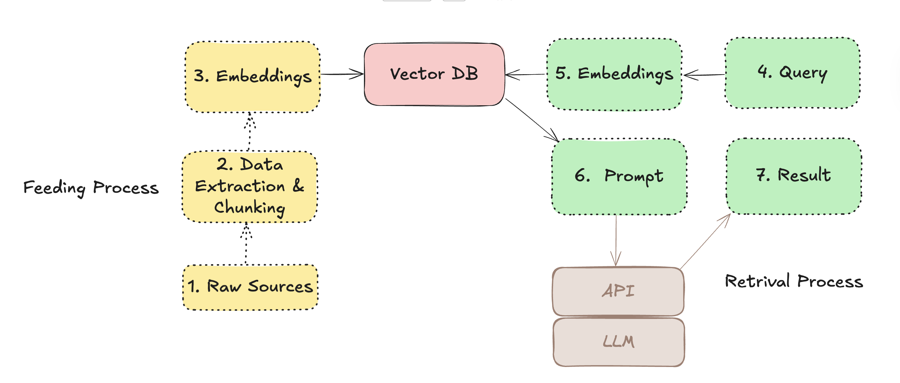
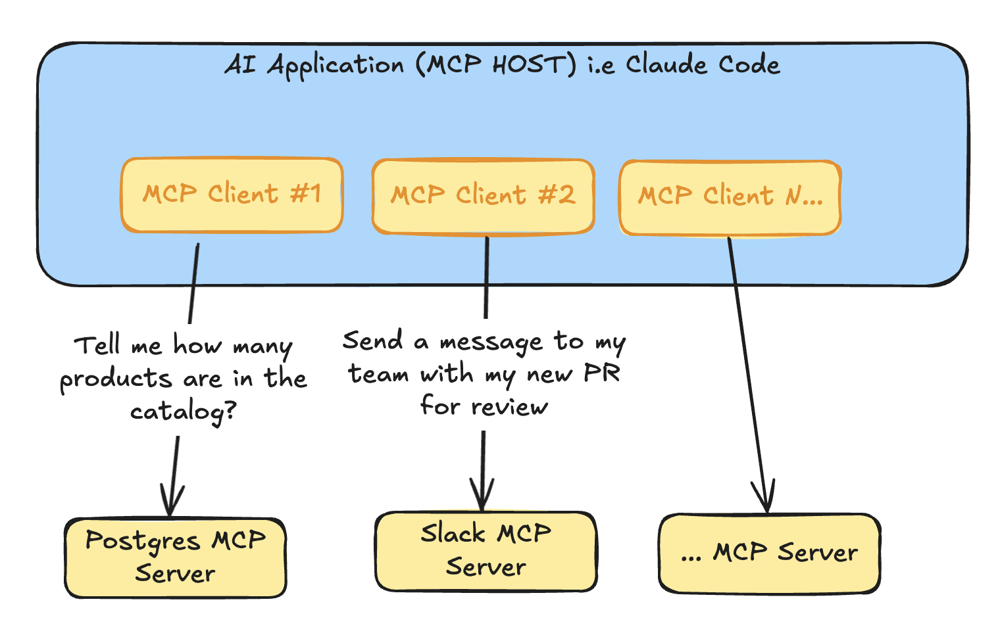
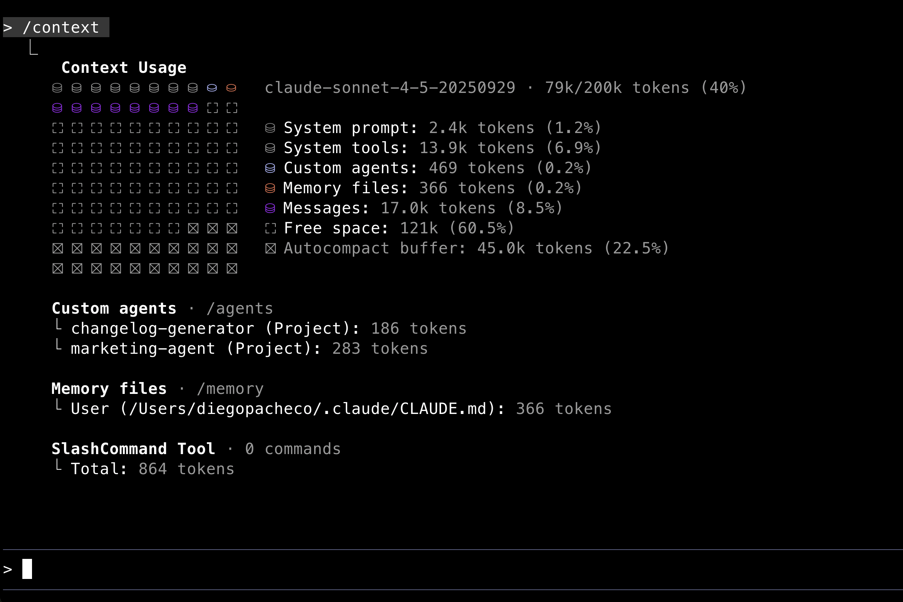
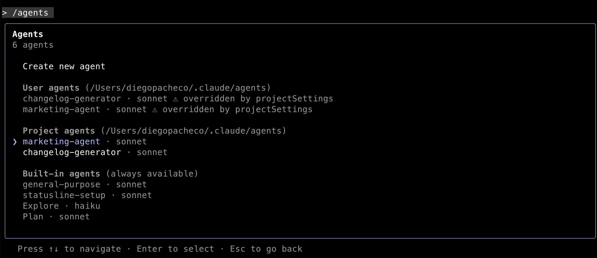

The Art of Sense: A Philosophy of Modern AI
Welcome to The Art of Sense: A Philosophy of Modern AI by Diego Pacheco.
Disclaimer
This book does not represent the views of any of my employers or clients past or future. The opinions expressed here are my own and do not reflect the views of any organization I am affiliated with past or future. This book is provided entirely with my own personal time, effort and devices. Several pages have links to my personal blog and POCs made on my personal time.
What to Expect
- Honest and direct advice
- Highly opinionated content
- Practical and actionable guidance
What this book is NOT
- Not a tutorial or step-by-step guide
- It's not a panacea for all AI problems
About the Author
👨💻 Diego Pacheco Bio Diego Pacheco is a seasoned, experienced 🇧🇷Brazilian software architect, author, speaker, technology mentor, and DevOps practitioner with more than 20 years of solid experience. He has been building teams and mentoring people for more than a decade, teaching soft skills and technology daily. Selling projects, hiring, building solutions, running coding dojos, long retrospectives, weekly 1:1s, design sessions, code reviews, and his favorite debate club: architects community of practices and development groups for more than a decade. Living, breathing, and practicing real Agile since 2005, coaching teams has helped many companies discover better ways to work using Lean and Kanban, Agile principles, and methods like XP and DTA/TTA. He has led complex architecture teams and engineering teams at scale guided by SOA principles, using a variety of open-source languages like Java, Scala, Rust, Go, Python, Groovy, JavaScript and TypeScript, cloud providers like AWS Cloud and Google GCP, amazing solutions like Akka, ActiveMQ, Netty, Tomcat and Gatling, NoSQL databases like Cassandra, Redis, Elasticache Redis, Elasticsearch, Opensearch, RabbitMQ, libraries like Spring, Hibernate, and Spring Boot and also the NetflixOSS Stack: Simian Army, RxJava, Karyon, Dynomite, Eureka, and Ribbon. He has implemented complex security solutions at scale using AWS KMS, S3, Containers (ECS and EKS), Terraform, and Jenkins. Over a decade of experience as a consultant, coding, designing, and training people at big customers in Brazil, London, Barcelona, India, and the USA (Silicon Valley and Midwest). He has a passion for functional programming and distributed systems, NoSQL Databases, a mindset for Observability, and always learning new programming languages.
🌱Currently: Working as a Principal Software Architect with AWS public cloud, Kubernetes/EKS, performing complex cloud migrations, library migrations, server and persistence migrations, and security at scale with multi-level envelope encryption solutions using KMS and S3. While still hiring, teaching, mentoring, and growing engineers and architects. During his free time, he loves playing with his daughter, playing guitar, gaming, coding POCs, and blogging. Active blog at http://diego-pacheco.blogspot.com.br/
💻 Core skills and expertise: Architecture Design and architecture coding for highly scalable systems Delivering distributed systems using SOA and Microservices principles, tools, and techniques Driving and executing complex cloud migrations, library and server migrations at scale Performance tuning, troubleshooting & DevOps engineering Functional Programming and Scala Technology Mentor, agile coach & leader for architecture and engineering teams Consultant on development practices with XP / Kanban Hire, develop, retain, and truly grow talent at scale
🌐 Resources
📝 Tiny Essays:
🥇 Tiny Side Projects
- 🧝🏾♂️ Tupi lang: programming language written in Java 23
- 🥫 Jello: vanilla JS, web-apis, trello-like
- 📑 Zim: vim-like written in Zig 0.13
- 💻 Gorminator: simple and dumb Linux terminal written in Go
- 😸 kit: Git-like written in Kotlin
- 🦀 Shrust: Compress/Decompress tool written in Rust
- 🕵🏽 Smith: It's a security Agent Written with Scala 3.x
- 📟 ZOS: A very tiny OS written in Zig
- 🎮 Tiny Games: Collection of JS games
Table of Contents
Zero
Part I
Part II
Part III
Epilogue
Chapter ZERO
Why I wrote this book?
I work with AI since 2017. In the summer of 2024, I spent the whole summer going deep and learning about AI. I did 300+ coding POCs, I read several books, I did several courses. On XMAS of 2024 I made my first migration using LLMs from Kotlin to Scala. In 2025, I tested all AI coding agents I could, I wrote MCPs, I did several experiments.
Still in 2025, I wrote my 4th book: Diego Pacheco's Software Architecture Library (SAL) where I used ai to help me with: proof reading, glossary, index and references generation(more details here).
There is so much out there, there are so many tools and people saying many things. This book should be a compass to guide you on your AI journey for engineering.
AI has existed since the 50s, but only in 2017 did we start having major leaps in Gen AI and LLMs. Basically after 2022 AI really took off. From 2024 and 2025 there was massive progress in the field. New models, new architectures, new tools, new ways of working.
This book is a mix of practical and pragmatic philosophy about how to use AI as an engineer. There is a mix of practical advice with theory, knowledge and concepts.
I hope you enjoy it!
Other Publications by Diego Pacheco
If you like my work, you can help me by buying one of my other books here:
- Continuous Modernization
- Principles of Software Architecture Modernization
- Building Applications with Scala
- Diego Pacheco's Software Architecture Library (SAL)
Chapter 1 - Making sense of AI
First of all we need to make sense of AI. What is it? How does it work? What are the different types of AI? In this chapter we will explore these questions and lay the foundation for understanding AI.
AI is 2 steps forward and one step back. AI hallucinates, AI ignores your requests, AI makes mistakes. We need to understand the limitations of AI and how to work around them.
We also need to understand how AI is changing how we do engineering. What are the new ways of working? What are the non-obvious ways we can leverage AI to be more productive and effective engineers?
Reality
Even with all the problems and the scams. AI is real and AI is here to stay. I don't know if AGI will happen one day, maybe, maybe not but there is no indication we are close to AGI.
Don't be fooled by marketing from people saying they have AGI. People lie, and LLM models do not think, even if they say "thinking". Now we don't need AGI to derive value from AI. AI is a force of disruption, just as we saw with the internet and mobile phones.
Therefore, change is happening, and you need to adapt to it. You can either be a victim of change or be the driver of change.
Force of Disruption
AI is a force of disruption. For one reason, people believe it. AI is not perfect, but does not need to be perfect. Yuval Harari said that we are in the "Amoeba age" of LLMs. That they are very basic and will get much better. I agree, but we don't know if it will be in 10 years or 500 years. What we do know is that AI is already disrupting many industries.
AI has the potential to disrupt like the internet, the mobile phone, and electricity did to some degree. For this reason alone, you should be paying attention.
Scams
We also need to acknowledge that there are scams. So many scams, here is a list of some:
- Turns Out That Extremely Impressive Sora Demo… Wasn’t Exactly Made With Sora
- Prankster tricks a GM chatbot into agreeing to sell him a $76,000 Chevy Tahoe for $1
- The Rabbit Is A Scam
- Taco Bell's Epic AI Fail 18,000 Waters
- California issues historic fine over lawyer’s ChatGPT fabrications
- Amazon’s ‘AI-powered’ cashier-free shops use manual work from offshore
- Huge List of Cases where AI lie in Court
From Recession to Rollback
In the beginning people thought that everybody would lose their jobs. Like:
Now we are seeing a rollback from "AI will take our jobs" to "We better rollback AI can get humans". Don't believe me? Here are some examples:
- Here is a collection of AI failures
- $1.5 Billion AI Unicorn Collapse, All Offshore Programmers Impersonating!
- Replacing Humans with AI is Going Horribly Wrong
- Klarna Slows AI-Driven Job Cuts With Call for Real People
- New data show no AI jobs apocalypse—for now
Randomness
AI is not precise and not 100% reproducible. It does not matter how good your prompt is, AI will generate different outputs. AI is really random in nature. Cory Doctorow and his amazing post: LLMs are slot-machines cleverly explains the random nature of LLM outputs. If you need 100% precision, Generative AI is not for you, LLMs are not for you.
Generative AI is just trying to predict the next sequence of tokens. That's all, an auto-complete on steroids. You need to understand the random nature of Gen AI when using LLMs.
Fooled By AI
If AI is lying to you, how do you know?
Think about that. If you don't know anything AI is "talking about", basically you are in deep trouble. You must be able to validate, fact check and even disagree with AI output. High dependency on AI is bad, we should be able to program if we don't have internet or are running out of tokens.
Do you know how to know when a human using AI is fooling you? Do you know if you are fooling yourself with AI?
Take a look at the Clever Hans effect.
The dark side of AI
AI can be and is used for a lot of scams. AI and people using AI can fool you in many ways. AI has a dark side. Perhaps many dark sides.
Outsourcing Gym Workout
Think about this, we could easily pay someone to go to the gym for us. That person can do push ups, run, lift weights. Be at the gym everyday and at the same time we never be at the gym. Genius! Well the issue is that your "contractor" will be strong and in shape but you will not. Although you can claim the glory of going to the gym, you do not have the benefits, you only have status.
With AI it is the same thing. Anyone can use AI to generate code, does that mean we are done there? Think about it, everybody has the same AI, same models, same capabilities. So just using AI is not differentiating.
Solutions vs Wrappers
Now, many startups are building or vibing something with .ai or a new Agentic. Under the hood most of the time it is just a wrapper around OpenAI API or Anthropic API. So what is the real value add?
I love Rappers but I never liked Wrappers. In my book Principles of software architecture modernization I wrote about the dangers of wrappers with internal shared libraries. Now we have the same danger but with external tools. There is an explosion of tools, new tools, all old tools being rebranded to AI, or AI features popping up in software we would not expect.
Vibe Coding
Andrej Karpathy coined the term "vibe coding" in one of his tweets in February 2025.

Vibe coding is a practice where you generate prompts and do not look at the code. You assume AI will take care of everything. However that premise is wrong. AI does not get everything right. AI:
- Ignores your requests: You ask for Java 25, AI delivers Java 21.
- AI Hallucinates: And makes up APIs that don't exist or code that gives you bugs at runtime.
- AI Just ignores you: You ask for a specific library, AI just ignores it and uses something else.
Vibe coding is very much like trial-and-error, you can build games with it even but don't fool yourself you can't use vibe coding for all things. Not reading the code and not reading the DIFFs is an awful practice. Asking for random changes and hoping the bugs go away is not a strategy. Any serious software engineer with a brain will tell you that vibe coding is a bad idea.
Where you can use vibe coding
- It's a small utility: It's very small, you would not do it, and it's not your core business. Example: A small script to convert CSV to JSON.
- It's for throw away discovery: You are prototyping something very fast, and you will throw away the code later.
- It's for learning: You are learning a new language or framework, and you want to get a feel for it quickly.
Considering those use cases, vibe coding is fine. However, I would need to say that for the last one you want to read the code. Therefore it is not vibe coding. Now, if you want to know whether something is possible and you are just aiming for feasibility, yes, you can vibe code it but throw it away after and do it right.
Where you MUST NOT use vibe coding
To the point where you should ban vibe coding. Your CORE business should not be vibe coded. Vibe coding your core business is a recipe for disaster. If one day we get AGI then we can revisit this. One important note, people lie, and they will market anything as "AGI", so we might have AGI but it might not be what you think it will be. Meaning we still have jobs, this idea that AI will kill engineers jobs is absurd. Thank God at this point people are coming to their senses as the hype cycle with AI is going down.
Your CORE business is how you make money, it's your bread and butter. Who wants to kill your milk cow? No one. Therefore don't vibe code your core business. Because that's a recipe for disaster.
Vibe Payments
Vibe Coding to some degree is a lack of respect. It's a lack of respect for people's entire careers and hard-working years in this profession. Vibe coding means you are not paying attention to the code. Think about this: if AI is doing everything, and you are not paying attention to the code, how much should you be paid? Or should you be paid the same thing every month? IMHO we need Vibe Payments. Vibe Coders should be paid with vibe payments. It would look like this:
- One month you get 50% less
- Another month you get 30% less
- Next month you get 20% more
- Another month is no payments
- Next time you owe -240% of your salary
You would not like it. But that did not stop you from throwing bad code at others. My friends, believe me, AI generates a lot of trash code. We need to do better.
Vintage Coding
I run coding dojos without AI for decades. A coding dojo is a space where senior engineers work with junior engineers, and they all learn from each other. Coding dojos follow TDD practices.
More importantly, coding dojos existed before AI. In a proper coding dojo, you don't use the "auto complete" features from your IDE; you type everything. Coding dojos should be done without AI, forcing you to think and be able to do things without AI. This I was calling "Vintage Coding" because now everybody does coding using AI. So having this practice where we can do coding without AI (by design) forces us to know our tools, and helps us with:
- Mastering our tools
- Being able to move fast without (consulting google or AI all the time) - no waiting
- Being able to quickly figure out solutions
- Improving our problem solving skills
- Improving our Data Structures and Algorithms game
- Improving attention to details
It's important to use AI to increase some productivity (which I think is something ballpark between 10-30% MAX). But it's also important to do the vintage coding (coding dojos) often, to keep us healthy and in shape. Like you go to the GYM because you are not a hunter and stay sitting in a chair all day long in zoom calls :-).
How Do You Drive a Car?
I don't know about you but I just drive a car. I don't think. It's natural, it's organic. I don't need to make any effort—it's so easy. Now ask yourself, is this the same for you? You probably will say YES. Well, then we need to ask ourselves the next question: why? I'll tell you why.
- Because you pass the driver license exam
- You study the rules of the road
- You practice driving a lot (for years probably)
Now the effect is that you do that with such efficiency. Now, imagine if you were driving a car and looking at the manual—literally, you have a thick book with rules, and while driving you check the manual every time:
- You need to turn left
- You need to turn right
- You need to stop at the red light
- You need to check the speed limit
- You need to backup
You will be such a terrible driver. I don't think anyone drives like this. Because we don't allow anyone to drive—there is a bar. But for engineering there is no bar. Anyone can do anything, even without being close to being qualified. Now I'm not advocating for extreme regulation of engineering. But what I'm saying is: imagine if I tell you that a huge number of programmers code like the driver I described. "Wow, no way Diego, this sucks!" Well, instead of the manual they were using StackOverflow, and before that forums, and now, guess what? They are using LLMs and AI Agents.
We need to have proficiency!
Zero to Demo vs Demo to Production
Vibe coding can be very useful for creating a DEMO. However putting software into production it's a whole different game.
Karpathy explains how he got a DEMO on waymo in 2014 and it was working. He thought it would be quick. More than 11 years later in 2025 Waymo is still not 100% done. Why? Because some tasks are hard and the gap between the demo and production is huge.
In the video below Andrej Karpathy explains it well:
Vibe coding can be useful to figure out what we want. Maybe to help non-engineers to figure out what they want, then better write requirements. In a sense vibe coding "democratizes" building and everybody can be a software engineer, however to really use what you build with "vibe coding" must be some simple task, some tasks cannot be vibe coded and like I said before is a big mistake. However if it is small enough and you can "build your own tool" why not.
AI Input
People see AI as output. As a way to "Beef Up" engineers. It's not wrong but you can't just use AI and never look at the code, this is a recipe for disaster.
AI can be a great teacher, however we need to always remember the teacher makes mistakes too. Using AI for input is still a great advantage, you preserve the output to be yours.
A tale of High School
When I was in high school. I remember a teacher of mine saying that people would go to google.com and just search for past year class and find the same homework and download a power point presentation and simply change their name on it. Of course this would never work because the teacher was smarter and usually people doing that took ZERO.
Using AI just for output, "vibe coding" is shutting down your brain, and we are not even close to having AGI. So this is a recipe for disaster. IMHO it is not different than copying someone's homework and just putting your name on it.
Now, of course, people will use the internet and it's okay to be "inspired" by somebody else's work. No one starts from scratch, but you need to spend the time to review and change it.
Lack of Respect
It's a lack of respect to throw some code to someone to review when the reviewer is the first person to read it, before even the "maker" or to be more honest the "viber". For this reason and 100 other reasons you need to read code AI produces.
You + AI
Now, if you use AI for input and do the due diligence process, then you are doing this right. You are using AI for input but the output is yours—it's your code, your work, and it must have your fingerprints. That way we get the best of both worlds. You learn, you produce, and you grow.
Mirror on Steroids
If you are great AI will make you even greater. I believe Gen-AI tools like AI Coding Agents like Claude Code are amazing. ChatGPT great. Co-Pilot great. However if you use these tools 24/7 and you shutdown your brain, you will worsen your skills (Don't believe me? read this Brain Study Shows ChatGPT Actually Makes You Dumber).
You can't use AI for all things, all the time. Because your over-dependency on AI is like a virus or a disease. Everything we do in life without balance is bad.
We should not be afraid of AI, we should not ignore AI. But if we don't have non-AI time we are making ourselves dumber. In that sense we need to make the right cycle. The right cycle will be use AI but also make time without AI.
From Hunters to Gatherers
In the past, we were hunters; we had to work hard to get food. Such bad times taught us and made us stronger. Now it's so easy to get food, it's so easy to get everything delivered to your home without any effort. AI is like that, it's effortless, it's frictionless—you want it? You got it.
Now you need to think about this: you need time without AI. Why? Because you also need to be yourself. If you do all the things that someone says and you don't have a voice anymore, you are in trouble.
From Mirror to Ownership
Someone smart knows what to use AI for, and what not to use AI for. For instance, you can use AI all day long, or not use it at all. You must remember that the ownership is yours. It does not matter if you use all or nothing from AI, it's your responsibility to own the results. Meaning you need to review the code, you need to change it, you need to critique it, you need to make it yours.
The bad mirror effect
If you suck, AI will make you suck even more. Because AI allows you to create trash or add poison into the systems much faster. If you are not paying attention to details. If you are not doing the hard work to get better, fact check AI, do your homework, you will be in trouble. AI can lie to you and you would not notice. But get this, good people will know you suck! Now, people can know you suck much faster!
Chapter 2 - Traditional AI
Machine Learning is not new. The field of Artificial Intelligence (AI) has been around since the 1950s, and many of the techniques we use today have their roots in traditional AI methods.
Traditional AI, can help you with:
- Predictive Analytics
- Classification: Spam detection, sentiment analysis, Fraud detection
- Clustering: Customer segmentation, Anomaly detection
- Optimization: Resource allocation, Scheduling
Traditional AI, you need train a model. Usually by splitting your data into 3 buckets.
- 60% Training Data
- 20% Validation Data
- 20% Test Data
The result of the training will be a machine learning model. If the training is done right, the model will perform well. However if the problem is too simple, you will have a Underfitting problem. If the problem is too complex, you will have a Overfitting problem.
Each one can be fixed by: Underfitting:
- Add more features (more data)
- Increase the model complexity (linear->polynomial)
- Change model Algorithm / Architecture (more layers/neurons)
- Reduce Regularization (penalty on the loss_function)
- More training epochs(batches)
Overfitting:
- The model is too complex and captures the noise in
- More training data
- Reduce the model complexity
- Reduce the number of features
- Increase Regularization
- Early Stopping
Learning Options
For traditional AI, you have basically a couple of different approaches like:
- Supervised Learning
- Unsupervised Learning
- Reinforcement Learning
- Semi-Supervised Learning
Supervised Learning
Means that you have labeled data. For example, you have a dataset of images of cats and dogs, and each image is labeled as either "cat" or "dog". The model learns to classify new images based on the labeled examples.
Use cases are:
- Spam Detection: Spam vs Ham
- Image Recognition: Hotdog vs Not Hotdog
- Regression: Predict House Pricing, Predict Stock Prices.
- Customer Churn Prediction: Churn vs Not Churn
- Credit Scoring Prediction: Good vs Bad
Main Algorithms for regression and classification are.
Regression:
- Linear Regression
- Decision Trees
- Random Forest
- Gradient Boosting
- Support Vector Machines
Classification:
- Logistic Regression
- Decision Trees
- Random Forest
- Gradient Boosting
- Support Vector Machines
- Naive Bayes
What is Traditional AI?
Traditional AI, also known as classical AI refers to AI approaches that tasks a single problem or even using a single algorithm. LLMs in the other case can handle a variety of tasks and problems using the same underlying model.
General Engineering vs Traditional AI
In engineering or programming we usually have:
--> Input [ Computation ] -> Results
--> Program [ ]
In engineering we are trying to create a program that can transform inputs into desired results.
In Traditional AI we have:
--> Input [ ]
--> Desired [ Computation ] -> Program
Result [ ]
Fundamental difference is that in traditional AI we are trying to generate a program that can produce the desired results from the given inputs.
Regression
Regression is a type of supervised learning where the goal is to predict a continuous output variable based on one or more input features. Unlike classification, where the output is categorical, regression deals with numerical values.
Common use cases for regression include:
- Predicting house prices based on features like size, location, and number of bedrooms.
- Forecasting stock prices based on historical data.
- Estimating sales figures based on marketing spend and other factors.
Main algorithms used for regression tasks include:
- Linear Regression
- Decision Trees
- Random Forest
- Gradient Boosting
- Support Vector Machines
Classification
Classification is a type of supervised learning where the goal is to predict a categorical label for a given input. The model learns from labeled training data to classify new, unseen data into predefined categories.
Common use cases for classification include:
- Spam Detection: Classifying emails as "spam" or "not spam".
- Image Recognition: Identifying objects in images, such as "cat" vs "dog".
- Customer Churn Prediction: Predicting whether a customer will "churn" or "not churn".
- Credit Scoring: Classifying loan applicants as "good" or "bad" credit risks.
Main algorithms used for classification tasks include:
- Logistic Regression
- Decision Trees
- Random Forest
- Gradient Boosting
- Support Vector Machines
Clustering
Clustering is a type of unsupervised learning where the goal is to group similar data points together based on their features. Unlike supervised learning, clustering does not require labeled data. Instead, it identifies patterns and structures within the data itself.
Common use cases for clustering include:
- Customer Segmentation: Grouping customers based on purchasing behavior for targeted marketing.
- Anomaly Detection: Identifying unusual data points that deviate from the norm, such as fraud detection in financial transactions.
- Document Clustering: Organizing a large set of documents into topics or themes.
Main algorithms used for clustering tasks include:
- K-Means Clustering
- Hierarchical Clustering
- DBSCAN (Density-Based Spatial Clustering of Applications with Noise)
- Gaussian Mixture Models
- Mean Shift Clustering
- Spectral Clustering
Dimensionality Reduction
Dimensionality reduction is a crucial technique in data science and machine learning that involves reducing the number of features or dimensions in a dataset while retaining as much relevant information as possible. This process helps to simplify models, reduce computational costs, and mitigate the curse of dimensionality.
Common use cases for dimensionality reduction include:
- Data Visualization: Reducing high-dimensional data to 2D or 3D for easier visualization and interpretation.
- Noise Reduction: Eliminating irrelevant or redundant features that may introduce noise into the model.
- Feature Extraction: Creating new features that capture the essential information from the original high-dimensional data.
- Preprocessing for Machine Learning: Improving model performance by reducing overfitting and enhancing generalization
Main algorithms used for dimensionality reduction tasks include:
- Principal Component Analysis (PCA)
- t-Distributed Stochastic Neighbor Embedding (t-SNE)
- Linear Discriminant Analysis (LDA)
Reinforcement Learning
Reinforcement learning is a type of machine learning that is used to teach an agent how to make decisions by trial and error. The agent learns to achieve a goal in an uncertain, potentially complex environment by interacting with the environment and receiving feedback in the form of rewards or penalties.
Agent: The learner or decision-maker that interacts with the environment.
Environment: The external system with which the agent interacts.
State: A snapshot of the environment at a given time.
Action: A decision or move made by the agent.
Reward: A scalar feedback signal that indicates how well the agent is doing.
Policy: A strategy or rule that the agent uses to make decisions.
Value Function: A function that estimates how good it is for the agent to be in a given state.
Model: A representation of the environment that the agent uses to predict the next state and reward.
Reinforcement learning is used in a wide range of applications, including:
- Game playing (e.g., AlphaGo)
- Robotics
- Autonomous driving
Chapter 3 - Generative AI
Generative AI focuses on creating large models that can generate new content, such as text, images, music, or even video. Large Language Models (LLMs) like GPT are pre-trained on vast amounts of data and can perform a variety of tasks, including text generation, translation, summarization, coding and much more.
What is Generative AI?
The advent of LLMs allows us to use AI models directly that were previously trained. Meaning you can use them right away without needing to train them yourself. This is called "Generative AI" because the model can generate new content based on the input you provide.
You will see many terms around generative AI, like "thinking", "reasoning", or "understanding". To be clear AI models do not actually think, reason, or understand in the way humans do. Instead, they analyze patterns in the data they were trained on and generate responses based on those patterns.
LLM models are like very advanced autocomplete systems. When you type a few words, they predict what comes next based on the vast amount of text they have been trained on. This allows them to generate coherent and contextually relevant responses.
Even given the limitations such systems are still incredibly powerful and useful for a wide range of applications, from drafting emails to writing code, creating art, creating logos, writing music, writing stories, creating code via AI Coding Agents and much more.
Transformers
Transformers Architecture was introduced in the paper "Attention is All You Need" by Vaswani et al. in 2017. It revolutionized the field of Natural Language Processing (NLP) and has since been adapted for various other tasks, including computer vision and audio processing.
Large Language Models (LLMs) like GPT-3, BERT, and others are built upon the Transformer architecture. Transformers are pretty complex. The key innovation of Transformers is the self-attention mechanism, which allows the model to weigh the importance of different words in a sentence relative to each other, regardless of their position.
Large Language Models (LLMs)
Large Language Models (LLMs) are a type of generative AI specifically designed to understand and generate human-like text. They are trained on vast amounts of textual data, allowing them to learn the patterns, structures, and nuances of language. LLMs are fed with books, articles, websites, and other text sources to develop a deep understanding of language.
LLMs are incredible good handling text-based tasks, such as:
- Text Generation: Creating coherent and contextually relevant text based on a given prompt.
- Translation: Converting text from one language to another.
- Summarization: Condensing long pieces of text into shorter summaries while retaining key information.
- Question Answering: Providing accurate answers to questions based on the information they have been trained on
- Sentiment Analysis: Determining the sentiment or emotional tone of a piece of text.
Common popular LLM modes include:
- OpenAI's GPT-5 and GPT-4
- Anthropic's Sonnet 4.5 and Opus
- Google's Gemini 2.0 Flash
- Meta's LLaMA 4
- XAI's Grok 4
Embeddings
Embeddings are a way to represent data, such as words, sentences, or images, as numerical vectors in a high-dimensional space. This representation allows AI models to understand and process the data more effectively.

By transforming text into numbers LLMs can compare similarities between different pieces of text, using a similarity score based on the distance between their corresponding vectors in the embedding space. Common similarity measures include cosine similarity and Euclidean distance.
Text Generation
LLMs are all about text generation. They generate a text based on a input text which is called "prompt". There is basically 2 prompts an LLM uses:
-
System Prompt: This is a special prompt that sets the behavior of the LLM. It tells the model how to respond, what style to use, and any specific instructions. For example, a system prompt might instruct the model to respond in a formal tone or to provide concise answers.
-
User Prompt: This is the actual input from the user. It can be a question, a statement, or any text that the user wants the model to respond to.
When you provide a user prompt, the LLM processes it along with the system prompt (if provided) and generates a response based on its training data and the instructions given in the system prompt.
In the beginning the term used to be "prompt engineering" which was the art of crafting the perfect prompt to get the desired response from an LLM. However, as LLMs have become more advanced, they are better at understanding and responding to a wide range of prompts without the need for intricate engineering.
Currently the most common term is "context engineering" which focuses on providing the right context to the LLM to get the best possible response. This can involve providing additional information, clarifying instructions, or setting specific parameters for the response.
Nowadays AI coding agents often ask questions to the user to gather more context before generating a response. This iterative process helps ensure that the LLM has all the necessary information to provide a relevant and accurate answer.
Vector Databases
A Vector Database (VDB) is a specialized database designed to store, index, and query high-dimensional vectors efficiently. These vectors typically represent data points in a multi-dimensional space, such as embeddings generated by machine learning models.
Remember the embeddings? Where we discussed how LLMs convert text into numerical vectors? These vectors capture the semantic meaning of the text, allowing for more effective comparisons and searches. Vector databases are optimized to handle these high-dimensional vectors, enabling fast similarity searches and nearest neighbor queries.
Common vector databases include:
LLMs can be run locally for instance in the case of LLAMA from meta, or via API calls to services like OpenAI, Anthropic, Cohere, or Hugging Face.
The way you interact with an LLM via API is passing text (prompts) via the context window. The context window is the amount of text the LLM can consider at one time. You don't have to pass the entire document to the LLM, just the relevant parts. This is where vector databases come in. By storing document embeddings in a vector database, you can quickly retrieve the most relevant sections of a document. That happens before passing the text to the LLM for processing. This approach is often referred to as "retrieval-augmented generation" (RAG).
RAG
Retrieval Augmented Generation (RAG) is a technique that combines the power of large language models (LLMs) with external knowledge sources to improve the quality and relevance of generated content. There are a couple of reasons why RAG is interesting:
-
LLMs are not good knowing the latest versions: For instance for a LLM to keep up of a version of software libraries is very hard because they are updated frequently. Using the RAG pattern we can consult a external system our vector database to get the latest information.
-
Reducing Cost: Every single input and output token from an LLM costs money. By using RAG we can reduce the amount of tokens we send to the LLM by only sending the relevant parts of a document instead of the entire document, or sending the right information right away so the LLM does not need to generate multiple responses to get to the right answer.
-
Mitigating Hallucinations: LLMs are known to hallucinate information, meaning they can generate plausible-sounding but incorrect or fabricated content. There are many sources of hallucinations but one is that let's say there is not enough data about a specific topic in the training data. By using RAG we can provide the LLM with accurate and relevant information from trusted sources, reducing the likelihood of hallucinations.
How RAG Pattern Works?
There are two main phases, first is the feed phase or feed process where we will ingest data, like documents or web pages, into a vector database. During this phase, the data is processed to create embeddings, which are numerical representations of the content that capture its semantic meaning. These embeddings are then stored in the vector database, allowing for efficient retrieval based on similarity.
Second phase is the retrieval part. Both phases are illustrated in the following diagram:
For the retrieval phase, we need a given query or text, which we turn into embeddings using the same model we used for the feed phase. Then we use these embeddings to search the vector database for similar embeddings, which correspond to relevant documents or pieces of information. The retrieved documents are then combined with whatever data is necessary or instructions to form a prompt that is sent to the LLM. The LLM uses this context to generate a response that is more informed and relevant to the query.
Sound Generation
LLM can generate sounds and even music based on text prompts. LLMs are capable or turning audio into text and text into audio. There are several models that can do this, including:
- OpenAI's Whisper: Whisper is a powerful automatic speech recognition (ASR) system that can transcribe spoken language into text. It is trained on a large dataset of diverse audio and is capable of understanding multiple languages and accents. Whisper can be used for various applications, including transcription services, voice assistants, and accessibility tools.
- Google's AudioLM: AudioLM is a model developed by Google that can generate high-quality audio samples from text prompts. It uses a combination of language modeling and audio synthesis techniques to create realistic sounds and music. AudioLM can be used for applications such as music generation, sound effects creation, and audio content generation.
- Meta's Make-A-Track: Make-A-Track is a model developed by Meta that can generate music tracks from text descriptions. It uses a combination of deep learning techniques to create melodic and rhythmic patterns based on the input text. Make-A-Track can be used for applications such as music composition, soundtrack generation, and audio content creation.
ElevenLabs and other companies provide APIs to generate high-quality speech from text using advanced neural network models. These services can be used for applications such as voiceovers, audiobooks, and virtual assistants.
Image Generation
LLM can generate images. There are several models that can do this, including:
- OpenAI's DALL·E: DALL·E is a model developed by OpenAI that can generate images from textual descriptions. It uses a combination of transformer architecture and generative adversarial networks (GANs) to create high-quality images based on the input text. DALL·E can be used for various applications, including art generation, design, and creative content creation.
- MidJourney: MidJourney is an independent research lab that has developed a model capable of generating images from text prompts. It focuses on creating visually appealing and artistic images, often with a surreal or imaginative style. MidJourney can be used for applications such as concept art, visual storytelling, and creative projects.
- Stability AI's Stable Diffusion: Stable Diffusion is an open-source model developed by Stability AI that can generate images from text descriptions. It uses a diffusion process to create high-quality images with diverse styles and themes. Stable Diffusion can be used for applications such as graphic design, concept art, and visual content creation.
Image Generation Use Cases
-
Art and Design: Artists and designers can use image generation models to create unique artworks, illustrations, and designs based on their ideas and concepts.
-
Marketing and Advertising: Marketers can generate custom images for advertisements, social media posts, and promotional materials, tailored to specific campaigns and target audiences.
-
Entertainment and Media: Content creators can use image generation models to produce visual content for movies, video games, and other media, enhancing storytelling and visual effects.
-
Education and Training: Educators can create visual aids, diagrams, and illustrations to enhance learning materials and make complex concepts easier to understand.
-
E-commerce: Online retailers can generate product images, promotional banners, and visual content to enhance their online presence and attract customers.
-
Personal Projects: Individuals can use image generation models for personal projects, such as creating custom artwork, greeting cards, or social media content.
I personally like AI generating images because for open source frameworks and libraries now, they can easily have a nice logo without much effort. Image generation is evolving fast, however it's still very common to see many mistakes and weird artifacts in the generated images, so it's not perfect yet. Make sure you pay a lot of attention to the details when using AI generated images.
This very Book Cover was generated by an AI image generation model!
{kind=link}
Video Generation
Video generation is an exciting area of generative AI that focuses on creating video content using machine learning models. However when we analyze the current state of video generation, we find that it is still in its early stages compared to other forms of generative AI like text and image generation. Text, Sound and Image are in much better shape than video generation. Text being the most advanced.
Common approaches for video generation include
- VQ-VAE-2: VQ-VAE-2 is a hierarchical model that uses vector quantization to generate high-quality videos.
- MoCoGAN: MoCoGAN is A model that separates motion and content to generate videos with coherent motion.
- TGANs: TGAN Temporal Generative Adversarial Networks that focus on generating videos by modeling temporal dynamics.
Video Generation still high experimental, I would say is not ready for production use cases yet. The quality of generated videos is often lower than that of images or text, and the models require significant computational resources to train and run.
Recent and Advanced Approaches
- Diffusion Models being applied for video generation.
- Hybrid Approach can generate videos in seconds.
- VideoPoet: A Large Language Model for Zero-Shot Video Generation
Open AI SORA's it's the most advanced video generation model available right now.
Fine Tuning
Fine-tuning is the process of taking a pre-trained model and adapting it to a specific task or dataset. This approach leverages the knowledge the model has already acquired during its initial training phase, allowing it to perform well on new tasks with less data and computational resources.
Fine-tuning can improve model performance but it also comes with challenges such as overfitting - which could be reduced with early stop and other techniques, catastrophic forgetting, and the need for careful hyperparameter tuning.
Chapter 4 - Agents
Agents are not new. I remember coding an agent in university back in the 2000s. However agents are even older than that. Agents are software that respond to change or an event on your behalf, agents can be 100% autonomous or assisted.
What is an AI Agent?
An AI Agent is a type of software agent that uses AI to perform tasks or computations, autonomously or semi-autonomously. AI agents can perceive their environment, make decisions, and take actions to achieve specific goals. They can range from simple rule-based systems to complex machine learning models that adapt and learn from their interactions. LLMs are a very good foundation to create AI agents.
What are Agents?
Agents are in the heat of the storm. Since AI is like a slot-machine, and we have "predictability" problems, applying AI to "features" or anything "consumer facing" is a big risk.
Now there is this field where we can apply AI and "it's fine-ish" if it fails, because it happens "under the hood", that field is called "engineering". Coding agents are AI agents that help developers to write code. Therefore being an AI use case where you have more chances of success. Because 95% of AI Pilots Fail. Engineering is a safe bet and a safe start for AI adoption.
AI Agents is how we get AI use cases into engineering. There are many valid use cases for AI in engineering like:
- Code Assistants
- Code Generators
- Code Reviewers (with caution and caveats)
- Troubleshooting
- Documentation
- Testing (test generation)
- Code Migrations
Context Window
Context window is the term that refers to the amount of text a model can process as input. LLMs do not have many options to interact with. Simply put, you basically do everything via the context window. What goes in the context window:
- User prompt: The text with the task or action you want the model to do.
- System prompt: The text that tells the model how to behave.
- Few shot examples: Examples of inputs and outputs that help the model perform better.
Pretty much everything goes in the context window. So the context window is critical and a bottleneck in many situations.
Create a markdown table comparing context window and size from OpenAI, Gemini, Grok, GPT 5, Llama 3 and more.
| Model | Context Window Size. |
|---|---|
| GPT-3.5 | 4,096 tokens |
| GPT-4 | 8,192 tokens |
| GPT-4-turbo | 128,000 tokens |
| Gemini 2.0 Flash. | 1,000,000 tokens |
| Gemini 2.0 Pro | 2,000,000 tokens |
| Grok 3 | 1,000,000 tokens |
| Grok 4 Fast | 2,000,000 tokens |
| LLaMA 3 | 8,192 tokens |
| Claude Sonnet 4.5 | 200,000 tokens |
| Claude Sonnet Corp. | 1,000,000 tokens |
llms.txt and llms-full.txt
llms.txt and llms-full.txt are text files (usually with markdown formatting) that contain information about various large language models (LLMs). Such an idea is not new; we had other indexing-related files like robots.txt or sitemap.xml. This is useful for LLM agents when reading websites more effectively.
I asked Claude Code about about it:
Prompt:
what is llms.txt and llms-full.txt?
I got:
llms.txt
A concise navigation guide for AI models containing:
- Project/site name (required H1 header)
- Short summary in blockquote format
- Structured hierarchy of important content
- Links to markdown files with detailed information
- Suggestions for essential vs optional content
Uses Markdown format specifically because LLMs read it well.
llms-full.txt
A comprehensive single file containing all documentation content directly, eliminating the need for navigation across multiple files.
Purpose
These files live at the root (/llms.txt and /llms-full.txt) to help LLMs:
- Quickly understand what a project/site is about
- Navigate to relevant information efficiently
- Access complete documentation in one place
Examples across the internet:
Coding Agents
Coding Agents are AI agents focused on writing code. There are many coding agents like: GitHub Copilot, Claude Code, Amazon Q, AWS Kiro, Google Jules, Open AI Codex, Google Gemini and many others. There are basically 3 kinds of coding agents.
Sandbox Based
Google Jules, Google Gemini, Open AI Code are examples of Sandbox Based coding agents. Such agents have their own environments, which is a sandbox, meaning if they break out, it's not your machine, so it's more secure. Some solutions often have a CLI option.
CLI Agents
CLI agents run on your machine. They are often much faster than sandboxes but by nature less secure. Examples of CLI agents are Anthropic Claude Code, Open AI Codex CLI, Gemini CLI.
Agentic Behavior or IDE based Agents
The 3rd category of agents is plugged into an IDE. Very often a VSCode fork. Classical example here is Github Copilot, but also Amazon Q and AWS Kiro. These agents are embedded into your IDE like VSCode or JetBrains Idea for instance. They are usually slower than CLI agents but more integrated in the development workflow for those who don't like the terminal.
These are often called "Agentic Behavior", because they cannot be deployed into production. You cannot host your IDE on AWS and deploy it as a solution, for that you need an API KEY.
API Keys
At the end of the day, if you want to use Agents as parts of your infrastructure solution, meaning you want agents in prod or use agents as part of a feature in your systems, you need an API KEY. There are many API KEYS, the best and most common are Anthropic, Open AI, and Google.
With an API KEY and a programming language like Rust, Scala or Go for instance, you can write a program that is an agent that can run in production.
Agent Patterns
Coding agents have some patterns. The most famous ones are MCP and RAG. But there are other patterns like:
- Caching
- Routing
- Filtering
- Splitting
- Aggregating
- Orchestration
Such patterns are not new. Many of them trace back to the good work of Enterprise Integration Patterns (EIP) by Gregor Hohpe and Bobby Woolf.
Software allows us to have greater flexibility. LLMs are not super flexible for customization; you pretty much need to use the context window to customize them. So whatever pattern you do (besides MCP) you will be doing BEFORE or AFTER the LLM call.
MCP is different because you are creating something like a "callback" so the LLM will invoke it during the processing.
Model Context Protocol (MCP)
Model Context Protocol (MCP) was created by Anthropic in 2024. The idea of MCP is that you have a standard way to provide context to LLMs. MCP is an open standard that allows developers to create and share context packages that can be used by different LLMs.
MCP is the AI equivalent of LSP, so you can have one server and that same server can work with a variety of different clients (AI tools). MCP is designed to be model-agnostic, so you can use the same context package with different LLMs.
MCP Architecture
MCP has a HOST which is the AI Agent or tool. Inside that host there are one or many MCP clients which connect to one or many MCP Servers.
As you can see in the previous picture, we are using Postgres MCP to read data from tables in plain English. We are also using Slack MCP to send a message to our team asking for a PR review.
Awesome MCPs
Here is a curated list of lots of MCPs you can use (be careful). Awesome MCPs include a list of local and remote MCPs, alongside Claude skills.
Other Approaches
There are other approaches to building and deploying coding agents beyond the MCP framework discussed in this book.
Agent 2 Agent
A2A.
We had APIs before MCP
There is some critique that MCPs could be just a JSON file since we are re-using the underlying APIS that already existed.
Claude Skills
Claude Skills is another approach to building coding agents, where you can bundle text and scripts together to create an agent.
Context 7
Context7 fixes a limitation LLMs have. LLMs have a hard time knowing the latest versions, since they are always behind the latest data. Context7 provides a way to connect LLMs to the latest data.
Telling AI what to do
It's always important that in your prompt you tell AI the versions you want. However, it is also important that you READ THE CODE because it is not uncommon for LLM models to use downgraded versions of libraries. For example, you asked for NodeJS 24, but AI gives you code for NodeJS 20. This happens very often.
Context7 Makes it Better
Context7 has a MCP that allows you to use it with most of the popular code agents. Context7 has up-to-date documentation on the latest versions of libraries and frameworks.
On October 27, 2025, when I checked the Context7 website, they had support for 49,317 Libraries, which is a lot. They are always updating the library list and information for methods and APIs.
Security and MCPs
MCP is awesome. However we need to remember that for coding agents running in your CLI with your machines running commands can be a nightmare for security. Especially if your laptop is a corporate macbook, that is on a corporate network. There are many attack vectors. Sandboxes suck for developers, it's not the best developer experience. So what do we do then.
Well we have a similar problem in security to MCPs which is called: Vulnerabilities. MCPs are not that different from vulnerabilities in libraries because there is an explosion of libraries.
There are dozens to hundreds of MCPs being created every day. Some of them are good, some of them are bad. Some of them are malicious. So how do we know which MCPs are safe to use?
MCP Guardrails
MCP Requires some guardrails. Here are some ideas:
- Only use MCPs from trusted sources. Like official marketplaces or repositories.
- Scan MCPs for vulnerabilities before using them.
- Use MCPs in isolated environments. Like sandboxes or containers.
Threating MCP as a BOMB
Andrew Zigler has this amazing blog post: Treating MCP servers like bombs which is spot on. This is one way of dealing with MCPs. Imagine someone or some automated process goes and checks out an MCP in an isolated environment, runs some tests on it, and then decides if it's safe to use or not.
MCP Scanning
There are proper MCP Scanning solutions out there. Like Evo by Snyk or if you want something open source consider Cisco MCP Scanner.
Popular Agents
There are many coding agents out there. I try and POC most of them. Here is a list of the most common and useful coding agents. I recommend you play with these coding agents, then you can see which ones you like the most.
Github Copilot
Github Copilot One of the first, if not the first coding agent. It is embedded into VSCode and other IDEs. It has a great developer experience. Copilot is in constant evolution. Copilot has one nice thing that is support for many LLM models.
Codex CLI
There are two flavors of Codex. There is the web sandbox version and there is the CLI version. Codex is a good agent where they have their own LLM Model which is different from Chat GPT model.
OpenCode
Opencode is an open source coding agent that works with many LLM models.
Jules
Jules is a web sandbox agent by Google backed by Gemini LLM models.
Kiro
Kiro is a coding agent by AWS. Kiro is a fork of VSCode and has a great developer experience. Kiro is different because it implements Spec Driven Development (SDD).
Claude Code
Claude Code by anthropic is another coding agent. IMHO it's the best agent coding tool out there. Claude code works with anthropic LLM models.
Chapter 5 - Claude Code
Claude was extremely disruptive when it launched Claude Code in mid 2024. Let's deep dive into Claude, learn what it can do and how it will change your day-to-day use of AI.
What is Claude Code?
Claude code is an AI coding agent. Claude code blends Gen-AI LLM models with engineering in a tool focused on the terminal. It allows developers to interact with AI models directly (via API) from their command line interface (CLI) to generate, modify, and manage code.
Claude code is very efficient for developers because developers are used to using the terminal for all things. Claude code is fast and very easy to use. So the bottleneck is not using claude code, but knowing the things you can do with it.
Prompt Library
Claude Code has a prompt library. When you have a powerful LLM, sometimes the GAP is not using the LLM, but knowing how you can use the LLM, meaning what things the LLM can do. So you need to learn which questions to ask; sometimes these questions are called "prompts".
Claude Prompt Library is a list of questions or prompts, if you will, that allow you to see things Claude can do.

Prompt Advice
Be Explicit in Prompts
Also highly recommended for Claude Code prompts:
- Claude Code follows instructions literally
- "Fix the bug" vs "Fix the authentication timeout in login.ts:45"
- Reference specific files, functions, line numbers when possible
- Use @filename to reference files in slash commands
- Break large tasks into steps
- Claude tracks context across the session
- Easier to review and iterate on smaller changes
Here is Anthropic's official advice on prompt writing for Claude Code
Commands
Let's explore claude code commands.
/init
Once you start a project with claude code, you run /init. Claude will read the whole codebase and create a file in your project called CLAUDE.md in the project path.

The resulting CLAUDE.md will vary depending on the project, but likely to contain:
- Project overview
- Build and serve instructions
- Version management details
- Content structure explanation
- Configuration information
CLAUDE.md works as a form of cache so claude doesn't need to read all the codebase all the time to figure out this information. Because:
- Claude code has no memory between sessions
- Reduce the amount of tokens used in each interaction
- Prevents some guessing from claude
CLAUDE.md is documentation for AI not for humans. You should run this program every time you start a new project with claude code.
/context
This command allow you to see where claude code is using context from. It shows the files claude code has read to answer your questions.
Why this is useful?
- Transparency: You can see exactly which files influenced the AI's response.
- Diagnostics: See if you're running out of space.
- Debug: You can see what is being loaded to claude memory.
You should run this program time to time to see how the context is being used.
/clear
This command clear the conversation history with claude code. It will remove all the messages exchanged in the current session.
/compact
This command will compact the context used by claude code. It will remove some of the less relevant files from the context to make space for new files.
/bashes
List all background bashes that claude code has run in the current session.
/cost
Show the cost of the current session. Only works if you are using an API key based subscription, either directly with Anthropic or via AWS Bedrock. If you are using a subscription based on messages, this command will not display anything useful.
/doctor
Will run diagnostics on the claude code installation. You will see an output like this:
> /doctor
Diagnostics
└ Currently running: npm-global (2.0.30)
└ Path: /Users/diegopacheco/.nvm/versions/node/v24.7.0/bin/node
└ Invoked: /Users/diegopacheco/.nvm/versions/node/v24.7.0/bin/claude
└ Config install method: global
└ Auto-updates enabled: default (true)
└ Update permissions: Yes
└ Search: OK (vendor)
/export
Will export the current session chat history to a file. This command is very useful. Here is an example of the output:
❯ cat 2025-10-30-caveat-the-messages-below-were-generated-by-the-u.txt
▐▛███▜▌ Claude Code v2.0.30
▝▜█████▛▘ Sonnet 4.5 · Claude Pro
▘▘ ▝▝ /Users/diegopacheco/git/diegopacheco/The-Art-of-Building-with-AI
> /config
⎿ Status dialog dismissed
> /config
⎿ Status dialog dismissed
> /bashes
⎿ Background tasks dialog dismissed
> /cost
⎿ With your Claude Pro subscription, no need to monitor cost — your subscription includes Claude Code usage
> /doctor
⎿ Claude Code diagnostics dismissed
/config
Allows you to configure several aspects of claude code. Like: If you want claude to auto-compact or not, if claude should show tips or not, what theme you want in the terminal, the output style, what LLM model to use, to have code rewinding enabled or not, among other options.
If you use a subscription-based plan, you can see a progress bar of how much of your tokens quota you have used. Also when the reset will happen.

/agents
Lists all the agents you have created. Also allows you to create new agents, edit existing agents or delete agents.
When you create a new agent, what claude code will do is to create a new folder under the path ~/.claude/agents/AGENT_NAME.md with all the files needed to run the agent.
Claude Code can generate the agent markdown file based on a prompt you will provide. You can edit the agent.md file later as well.
Bash Mode
Claude Code has an Interactive Mode which I prefer to call Bash Mode. In this mode, you can interactively issue bash commands to Claude and Claude will run them in the terminal for you.
To activate this mode, you just type !, then after that you type whatever bash command you want and then press enter to run.
You literally can call any program or script that you have available in your terminal. For example, you can do: ps, kill, run npm, run maven mvn, as long as it doesn't need an interactive shell to run.
Exclusions
If you don't want claude to read some files, there is a way to tell claude code to ignore them. You might want to do this for a couple of reasons:
-
- You want to save tokens: Tokens are money, tokens are expensive, you don't want to waste time and money on claude reading trash.
-
- You have sensitive information: Maybe you have some files that contain sensitive information that you don't want claude to read. Like PII, user data, credentials, etc.
-
- You have large files that are not useful: Maybe you have some large files that are not useful for claude to read. Like logs, binaries, etc.
To make claude ignore these files you need to add an entry in:
- Global Exclusions:
~/.claude/settings.json - Project Exclusions:
.claude/settings.json
And add an entry like this:
{
"permissions": {
"deny": [
"Read(./node_modules/**)",
"Read(./vendor/**)",
"Read(./venv/**)",
"Read(./dist/**)",
"Read(./build/**)",
"Read(./out/**)",
"Read(./**/*.min.js)",
"Read(./**/*.bundle.js)",
"Read(./**/*.map)",
"Read(./package-lock.json)",
"Read(./yarn.lock)",
"Read(./pnpm-lock.yaml)",
"Read(./.env)",
"Read(./.env.*)",
"Read(./**/*.key)",
"Read(./**/*.pem)",
"Read(./credentials.json)",
"Read(./coverage/**)",
"Read(./.nyc_output/**)",
"Read(./.vscode/**)",
"Read(./.idea/**)",
"Read(./**/*.log)",
"Read(./data/**)"
]
}
}
Claude can still read these files if you instruct it, otherwise it will ignore them.
I wrote this script:
claude-ignore.sh
#!/bin/bash
CLAUDEIGNORE=".claudeignore"
GITIGNORE=".gitignore"
SETTINGS_FILE=".claude/settings.json"
ADDED_IGNORE=()
ADDED_DENY=()
mkdir -p .claude
if [ -f "$GITIGNORE" ]; then
while IFS= read -r line || [ -n "$line" ]; do
if [ -n "$line" ] && [[ ! "$line" =~ ^#.*$ ]]; then
if ! grep -Fxq "$line" "$CLAUDEIGNORE" 2>/dev/null; then
echo "$line" >> "$CLAUDEIGNORE"
ADDED_IGNORE+=("$line")
fi
fi
done < "$GITIGNORE"
fi
SETTINGS_ENTRY=".claude/settings.json"
if ! grep -Fxq "$SETTINGS_ENTRY" "$CLAUDEIGNORE" 2>/dev/null; then
echo "$SETTINGS_ENTRY" >> "$CLAUDEIGNORE"
ADDED_IGNORE+=("$SETTINGS_ENTRY")
fi
if [ ! -f "$SETTINGS_FILE" ]; then
echo '{"writePermissions":{"deny":[]}}' > "$SETTINGS_FILE"
fi
TEMP_FILE=$(mktemp)
if [ -f "$GITIGNORE" ]; then
while IFS= read -r line || [ -n "$line" ]; do
if [ -n "$line" ] && [[ ! "$line" =~ ^#.*$ ]]; then
if ! grep -q "\"$line\"" "$SETTINGS_FILE" 2>/dev/null; then
ADDED_DENY+=("$line")
fi
fi
done < "$GITIGNORE"
fi
if [ ${#ADDED_DENY[@]} -gt 0 ]; then
python3 -c "
import json
import sys
with open('$SETTINGS_FILE', 'r') as f:
data = json.load(f)
if 'writePermissions' not in data:
data['writePermissions'] = {}
if 'deny' not in data['writePermissions']:
data['writePermissions']['deny'] = []
deny_list = data['writePermissions']['deny']
new_entries = [$(printf '"%s",' "${ADDED_DENY[@]}" | sed 's/,$//')]
for entry in new_entries:
if entry not in deny_list:
deny_list.append(entry)
with open('$SETTINGS_FILE', 'w') as f:
json.dump(data, f, indent=2)
"
fi
echo "Added entries to .claudeignore:"
for entry in "${ADDED_IGNORE[@]}"; do
echo " - $entry"
done
if [ ${#ADDED_IGNORE[@]} -eq 0 ]; then
echo " (no new entries added)"
fi
echo ""
echo "Added write permission denies to .claude/settings.json:"
for entry in "${ADDED_DENY[@]}"; do
echo " - $entry"
done
if [ ${#ADDED_DENY[@]} -eq 0 ]; then
echo " (no new denies added)"
fi
Where it will turn your .gitignore into claude exclusions. You can run it whenever you want to sync your .gitignore with claude exclusions.
ultrathink
ultrathink is an instruction you give to Claude Code that makes it think more deeply about the problem at hand. It encourages the model to take extra time to analyze the situation, consider multiple perspectives, and generate more thorough and well-reasoned responses.

The moment you type ultrathink, you will see Claude highlight the word "ultrathink" with one color per letter, explaining that Claude will behave differently now.
I asked Claude Code the difference between normal "Thinking mode on" and "ultrathink" and this is what I got:
Normal "Thinking On" Mode
- Claude shows brief internal reasoning between actions
- Thinking appears in short blocks as Claude works
- Uses a standard token budget for reasoning
- Good for general tasks and problem-solving
Ultrathink Mode
- Extended thinking with a much larger token budget (up to 10,000+ tokens)
- Claude spends significantly more time reasoning before responding
- Better for highly complex problems like advanced math, coding, and deep analysis
- Higher latency and cost due to extensive reasoning
- Claude can reason through multiple approaches and self-correct
Custom Commands
Another very good feature in claude code is custom commands. Custom commands allow you to create your own commands. The nice thing is that claude will never run them, it will only run if you explicitly tell it to. This is useful for creating commands that you want to use frequently without having to type them out each time.
Custom commands are useful for expensive tasks that you don't run often between sessions but don't run on every prompt. Here are some examples of custom commands:
- /report.md: A command to generate a report based on data from a database.
- /english.md: A command that fix your english typos and grammar.
- /summarize.md: A command that summarizes long texts into concise points.
- /translate.md: A command that translates text from one language to another.
To create a custom command, you simply create a markdown file in the ~/.claude/commands/ directory with the name of the command you want to create. For example, to create a custom command called /report.md, you would create a file called report.md in the ~/.claude/commands/ directory.
Commands are just a markdown file with instructions on what to do. You can use any markdown formatting you like, including code blocks, lists, and images.
Custom Commands Examples
Example 1: Code Review Command
File: .claude/commands/review.md
Review the changes in this file for:
- Bugs and edge cases
- Performance issues
- Security vulnerabilities
- Code style and best practices
- Missing error handling
Provide specific line numbers for issues found.
Usage: /review @src/auth.js
Example 2: Test Generation Command
File: .claude/commands/tests.md
Generate comprehensive tests for $1 covering:
- Happy path scenarios
- Edge cases
- Error conditions
- Boundary values
Use the existing test patterns in this project.
Usage: /tests src/utils/validator.js
Example 3: Performance Audit
File: .claude/commands/perf.md
Analyze $1 for performance issues:
- Unnecessary loops or iterations
- Database query optimization
- Memory allocations
- Blocking operations
- Caching opportunities
Suggest specific optimizations with code snippets.
Usage: /perf @api/users.ts
Custom Agents
Claude Code allows you to create custom agents. Custom agents can be generated by a prompt. At the end of the day a custom agent is just a markdown file that lives under the path ~/.claude/agents/AGENT_NAME.md.
A custom agent is automatically loaded by claude code when you start it. You can create, edit or delete custom agents using the /agents command. Custom agents are different than commands. For instance, commands you need to invoke them using the /command_name syntax. Custom agents you can just call them by their name or just tell your prompt to claude and it will invoke the agent for you.
Here are some ideas for custom agents you can create:
- Code Reviewer Agent: An agent that reviews code for best practices, security vulnerabilities, and performance optimizations.
- Documentation Generator Agent: An agent that generates documentation for codebases, APIs, or libraries.
- Bug Finder Agent: An agent that analyzes code to identify potential bugs and suggests fixes.
- Refactoring Agent: An agent that suggests and applies code refactoring techniques to improve code quality and maintainability.
- Test Case Generator Agent: An agent that creates unit tests or integration tests for given code snippets or modules.
- Deployment Agent: An agent that automates the deployment process of applications to various environments.
- Data Analysis Agent: An agent that performs data analysis tasks, such as data cleaning, visualization, and statistical analysis.
- Project Manager Agent: An agent that helps manage project tasks, timelines, and resources.
- Learning Agent: An agent that provides tutorials, coding exercises, and learning resources for developers.
- Performance Optimizer Agent: An agent that analyzes code for performance bottlenecks and suggests optimizations.
- Security Auditor Agent: An agent that conducts security audits on codebases to identify vulnerabilities and recommend improvements.
- SQL Agent: An agent that helps generate, optimize, and troubleshoot SQL queries.
- Marketing Agent: An agent that assists with creating documents, emails, and content that non-technical users can read and understand.
Custom agents are a big and very important feature of Claude Code.
Hooks
Hooks are a nice feature that claude code has that allows you to create custom workflows. Hooks allow you to trigger a script for instance that runs all maven tests on the backend, every time claude code finishes refactoring some code in Java. Another example, let's say you want to run a linter or a formatter every time claude code finishes generating some code for you in Javascript. You can create a hook for that.
Here is an example of how to create a hook in claude code.
MCP and Claude Code
Anthropic created MCP to standardize how context is provided to LLMs. Claude Code as an AI coding agent leverages MCP to enhance its capabilities. However, people think that Claude Code can only do things using MCP, which is not true. Claude Code has out-of-the-box tools that can do several things. In other words, Claude can do a lot without MCP.
I asked claude what tools it has inside of the box and this is what I got:
Prompt:
Tell me what tools Claude Code has inside-of-the-box. I don't want to know about MCP (external nor remote).
Result:
⏺ Claude Code has these built-in chat/interaction tools:
Task Management:
- TodoWrite - Create and manage task lists during coding sessions
User Interaction:
- AskUserQuestion - Ask questions during execution with multiple choice options (supports multi-select)
Extensibility:
- SlashCommand - Execute custom slash commands defined in .claude/commands/
- Skill - Execute skills (currently none installed in your environment)
Information Gathering:
- WebSearch - Search the web for current information
- WebFetch - Fetch and analyze content from URLs
Specialized Agents:
- Task - Launch specialized agents for complex tasks:
- Explore - Fast codebase exploration
- Plan - Planning agent
- general-purpose - Multi-step task handling
- changelog-generator - Generate changelogs from git commits
- marketing-agent - Translate technical content to plain language
All other tools (Bash, Read, Write, Edit, Glob, Grep, NotebookEdit) are file/system operation tools rather
than chat-specific features.
As you can see, Claude can do a lot without MCP. One important thing that I need to call out is that because Claude Code can run bash commands in your terminal, that's perhaps one of the most powerful things in the universe. MCP is great, but there are lots of bad actors out there and you need to be careful using MCP. Now, using Claude Code tools and only leveraging what's in your machine, you are more secure. Because if you have a vetted process to get tools on your machine or you do your due diligence for what you install, then you can piggyback on that.
Running bash is a Swiss Army knife. You can do almost anything with bash. For instance, here is a list of things, and not limited to what Claude can do with bash:
- Run any docker container: Same for podman. Yes, there is an attack vector here, but if you get your containers from an internal trusted registry, you are good.
- Execute: Claude can also execute any command on a container, so it can run SQL, it can deploy pods in K8s, it can create data, it can do anything you can do in bash.
- Script: Claude can create the script you need to get something done and executed.
Status Line
Claude status line is a feature where you can customize the status line that appears at the bottom of the Claude Code interface. You can do that to display useful information; there is an MCP for that called ccstatusline. You can use that MCP to create your own status line.
To install:
npx ccstatusline@latest
CCStatusline Configuration | v2.0.21
╭────────────────────────────────────────────────────────────────────────────────────────────────────────────────╮
│ > Preview (ctrl+s to save configuration at any time) │
╰────────────────────────────────────────────────────────────────────────────────────────────────────────────────╯
Model: Claude | Ctx: 18.6k | ⎇ main | (+42,-10)
Main Menu
▶ 📝 Edit Lines
🎨 Edit Colors
⚡ Powerline Setup
💻 Terminal Options
🌐 Global Overrides
🔌 Uninstall from Claude Code
🚪 Exit
Configure any number of status lines with various widgets like model info, git status, and token usage
Then do all configs you want and just click on "Install on Claude Code".
Useful MCPs
Here is a list of useful MCPs for Claude Code, again, use with caution.
- MCPs
- MCPs from Claude Docs
- awesome-claude-code
- awesome-mcp-servers 1
- awesome-mcp-servers 2
- model context protocol servers
Decision Criteria
When to Use: Hooks vs Commands vs Agents vs CLAUDE.md?
I asked claude code for some criteria to decide when to use each of these features.
Here is the result
1. CLAUDE.md - Behavioral Guidelines
Use when: You want to change HOW Claude behaves globally or per-project
Criteria:
- ✅ Style preferences (no comments, no emojis, code formatting)
- ✅ Language/framework conventions (always use TypeScript strict mode)
- ✅ Project-specific patterns (our API always returns JSON with snake_case)
- ✅ Quality standards (always write tests, never use any type)
- ✅ Restrictions (never install packages without asking, avoid library X)
Examples:
~/.claude/CLAUDE.md (global)
- Never use comments
- Always use const over let
- Prefer functional programming
- Never use emojis
.claude/CLAUDE.md (project-specific)
- This project uses Redux Toolkit
- API responses are snake_case
- All components must have PropTypes
- Test files go in tests directory
Think of it as: Your .eslintrc or .editorconfig but for Claude's behavior
2. Custom Commands - Reusable Prompts
Use when: You type the same instructions repeatedly
Criteria:
- ✅ You find yourself copy-pasting the same prompt
- ✅ Task is well-defined and repeatable
- ✅ You want quick access via /command-name
- ✅ Task is single-purpose and focused
- ✅ Works within a single conversation context
Examples:
.claude/commands/review.md Review $1 for:
- Security vulnerabilities
- Performance issues
- Edge cases
- Code duplication
Usage: /review src/auth.ts
.claude/commands/test.md Generate comprehensive tests for $ARGUMENTS including:
- Happy path
- Edge cases
- Error handling
- Mocks for external dependencies
Usage: /test src/payment.js
Think of it as: Git aliases or bash aliases for Claude
3. Hooks - Event-Driven Automation
Use when: You want something to happen automatically on events
Criteria:
- ✅ Needs to run automatically (no manual trigger)
- ✅ Responds to events (file write, tool call, session start)
- ✅ Integrates with external tools (git, linters, formatters)
- ✅ Validation or enforcement (block bad actions)
- ✅ Logging and monitoring
Examples:
Auto-format on save:
{
"hooks": {
"tool-result": {
"command": "if [[ '${TOOL_NAME}' == 'Write' ]]; then prettier --write '${TOOL_ARGS}'; fi",
"enabled": true
}
}
}
Prevent commits to main:
{
"hooks": {
"tool-call": {
"command": "if [[ '${TOOL_NAME}' == 'Bash' ]] && echo '${TOOL_ARGS}' | grep -q 'git push.*main'; then
echo 'Blocked: Cannot push to main'; exit 1; fi",
"enabled": true,
"blocking": true
}
}
}
Think of it as: Git hooks or GitHub Actions for Claude
4. Custom Agents - Complex Multi-Step Tasks
Use when: Task requires multiple rounds of searching, analysis, and decision-making
Criteria:
- ✅ Task is exploratory (need to search, then decide, then search again)
- ✅ Multiple tool calls required (10+ operations)
- ✅ Requires decision trees (if X found, then do Y, else do Z)
- ✅ Needs to work autonomously without user input
- ✅ Complex context management across many files
Examples:
Refactoring Agent:
- Search for all usages of a function
- Analyze each usage context
- Determine safe refactoring strategy
- Apply changes across multiple files
- Verify nothing broke
Security Audit Agent:
- Scan codebase for patterns
- Analyze dependencies
- Check configuration files
- Cross-reference with CVE databases
- Generate report with severity levels
Migration Agent:
- Find all files using old API
- Understand usage patterns
- Generate migration plan
- Apply transformations
- Update tests
Think of it as: A specialized team member who can work independently on complex tasks
Decision Matrix
| Need | Solution |
|---|---|
| Claude always formats code a certain way | CLAUDE.md |
| Run prettier after every file write | Hook |
| Quick code review on demand | Custom Command |
| Audit entire codebase for security issues | Custom Agent |
| Never use comments | CLAUDE.md |
| Auto-run tests after changes | Hook |
| Generate API documentation | Custom Command |
| Migrate 50 files from old to new API | Custom Agent |
| Enforce git commit message format | Hook |
| Refactor function with specific pattern | Custom Command |
| Analyze and fix all TypeScript errors | Custom Agent |
| Always use tabs not spaces | CLAUDE.md |
Practical Combination Example
Scenario: You're building a React app and want comprehensive tooling
CLAUDE.md (Project-wide rules)
- Always use functional components
- Props use TypeScript interfaces
- State management uses Zustand
- Never use
anytype
Custom Commands (Quick actions) /component - Generate new React component with tests /hook - Create custom React hook /test - Generate tests for component
Hooks (Automation)
{
"tool-result": {
"command": "prettier --write && eslint --fix",
"enabled": true
}
}
Custom Agent (Complex tasks)
- Component refactoring agent
- Accessibility audit agent
- Performance optimization agent
Quick Selection Guide
Ask yourself:
- Is it about HOW Claude should work? → CLAUDE.md
- Do I type this same prompt often? → Custom Command
- Should this happen automatically? → Hook
- Is this a complex multi-step investigation? → Custom Agent
Chapter 6 - Testing with AI
Testing matters more than ever with AI. Because AI hallucinates and eventually will mess up your existing code, and will stop working, so when will you catch that? Hopefully before your users do. Because AI is not 100% predictable and has precision issues, you must have tests to compensate for that.
Otherwise, AI will break your code; it's just a matter of time, it will happen. As long as you have good testing diversity and decent coverage, you will be fine because tests are the ultimate guardrails for AI.
So before AI, 100% tests sounded crazy, but now it is actually a must-have. Otherwise, AI will introduce a lot of P0 bugs more often than you can imagine. Before we do any other more advanced use case for coding agents using AI, we need to get more tests and get good and reliable tests in place.
Why use AI for Testing?
Software engineers are under constant pressure for delivery. Such pressure plus immature management leads to skipping tests. You might not write the best abstraction for the universe, you might not write the best code to deliver—such trade-offs are fine as long as used with balance and you are not living tech-debt first. Now tests should never be skipped, no matter how much in a hurry you are, no matter how tight your deadline is, no matter if the sprint is close to the end. Skipping tests is always the wrong decision.
We know skipping tests is wrong. But all companies have legacy systems. There is always software before we arrive at a company (unless it is a startup on day 1). The reality is there is so much technical debt that you can't pay it all at once. Companies pay technical debt but never as much as they should. Quality ends up being compromised, which is not a wise decision and eventually will have catastrophic consequences.
Thanks to AI coding agents, now we can add more tests, which before might not be possible due to lack of prioritization or investments. Now we can do more tests to systems we would not do it, not because we did not want to but because constraints were too high. AI coding agents can help us write more tests, and better tests, faster. This is a huge win, and we should take it.
Testing AI
We should not test OpenAI API or Anthropic API. That will cost money and will be hard to get right, due to the lack of predictability of such systems. However, a smoke test would be reasonable. Smoke tests are high-level tests that verify that the most important functionalities of a system are working. They are not meant to be exhaustive, but rather to provide a quick check that the system is functioning as expected.
Integration tests that test functionalities that have AI in the middle or are purely AI are okay to test, but you need to be smart because you might not have the same result all the time, so maybe instead of checking an absolute value, check if something is present, or contains the same range of possible values.
AI to Help with Testing
One of the best use cases for AI in engineering is around test generation. AI is very good at generating tests. Facebook has this amazing paper about their findings using AI to generate tests, published in 2024.
You can use AI to:
- Generate Unit Tests
- Considering Happy Path
- Considering Edge Cases
- Considering Error Handling
- Considering negative and boundary cases
- Considering a bit of chaos like random inputs or even nulls and unexpected types/values
- Generate Integration Tests
- Generate End to End Tests
Now for integration tests, we need to keep in mind we will need to set up infrastructure in order to do proper test induction. But you can use AI to create testing interfaces and then have proper testing structure and proper testing principles in place.
You can also use AI to check if you have gaps in your test coverage, just ask it for it. Even if AI goes wrong, this is relatively safe; worst case, AI will generate tests you don't need, then you can delete them. Facebook talks about this in their paper. Facebook's solution is to blend with engineering, running the tests, checking coverage, and getting rid of unnecessary tests.
All tasks that Claude Code can do, either by custom agents, custom commands, or a simple good prompt. I recommend custom commands for this, as you can have a more structured approach.
Chapter 7 - Migrations with AI
Migrations are one of the best use cases for AI and engineering alongside with testing. Migrations can be complex but they are also very repetitive, making them a perfect candidate for AI assistance.
AI does a great job helping in migrations. It's not perfect and there will be setbacks and even bugs but the time savings are enormous.
What is a Migration?
It's a different kind of task or software project where it's necessary to change from:
- One version to another (from Spring boot 2x to 3x)
- From one technology to another (like from Python to Scala)
- From one version of the database to another like (Postgres 16 to Postgres 17)
- From one cloud provider to another (AWS to GCP)
- From one framework to another (like from Angular to React)
Migrations are necessary for a variety of reasons, like:
- Security: To handle security issues and vulnerabilities
- Performance: To improve performance and scalability
- Cost: To reduce costs
- Design and maintainability: To improve design and maintainability
- New features: To take advantage of new features and capabilities
Challenges in Migrations
Migrations are difficult for a variety of reasons:
- Complexity: Migrations can be complex, especially for large applications with many dependencies. Might require a specific order of operations.
- Downtime: Migrations can require downtime, which can be disruptive to users. Not all migrations require downtime, but it's easier with downtime.
- Data Loss: There is a risk of data loss during migrations, especially if not done carefully (in case of database or encryption migrations).
- Time Pressure: Teams are usually focused on features and migrations take this time away from them.
- Testing: Migrations require extensive testing to ensure that everything works correctly after the migration. Usually testing is not perfect, which forces migrations to discover problems that were buried in the old system.
Difficult Reality at Scale
Migrations don't happen as often as they should.
A lot of technical debt.
The thing is that the more often you do migrations, the easier it gets, but only if you have good overall architecture and operating principles; otherwise, it is a war that never ends.
Migrations are easily one of the biggest pains at scale. Not because migrations are impossible, but because people tend to not take them seriously enough and a snowball effect happens. Once the snowball starts rolling, it gets harder and harder to do migrations.
Why use AI for Migrations?
Migrations are hard. Companies do not do as many migrations as they should. However, with AI some of the friction and heavy lifting can be reduced.
Inventory
Inventory is the first step; we need to perform assessments to know what we are dealing with. Usually inventories are ignored and that is a big mistake.
An inventory allows us to plan and strategize our next steps. Considering the advent of AI agents, now it's much easier to generate inventories.
Migrations in Phases
A decent migration has phases. Depending on the migration, you will have more phases. It's very important to have a diagram where you can visualize the phases of the migration.
Here is an example of migration phases:
- Phase 0 - Inventory
- Phase 1 - Planning
- Phase 2 - Preparation
- Phase 3 - Execution
- Phase 4 - Validation
- Phase 5 - Rollback (if necessary)
- Phase 6 - Monitoring
Execution itself should be broken down into smaller phases depending on the size of the migration. Validation is something that should also happen during preparation and execution.
Testing
You can't move if you don't have tests. Add tests first.
Since Gen-AI has this issue with determinism, it's very likely AI will introduce bugs, or even just delete whole features and mess up with things unrelated to your prompts.
Tests are a great way to compensate for that. Because good tests are deterministic, they will help you identify when something is broken.So before touching anything, make sure you have good testing in place, we can use AI to help us write those tests as well.
After Migrations
When migrations end, they don't end. Because you always need to do cleanup. Before you do cleanup, you need to check for leftovers and orphaned resources.
Usually monitoring and logging are the way to verify if someone (piece of software) was left behind.
Chapter 8 - Non-Obvious Use Cases
For this chapter I want cover some non-obvious use cases where AI can help engineers be more productive.
Proof Reader
Using AI to Write and Spell Check Documents, AI is a great Proof Reader.
It's common for people to make mistakes when writing documents; sometimes it's just typos, other times it's grammar mistakes or even factual mistakes. AI is really great at finding and fixing all these common issues.
Here is an example of a Claude Code command you could use to proofread a document or your project:
~/.claude/commands/english.md
english.md
# Fix my english
- Read all my files
- Fix all my english issues
- Fix my typos
- Don't touch the HTML files only the markdown files
- Make sure you dont break anything, make sure you dont lose content
Troubleshooting
Using AI to help troubleshoot problems in code, systems, and architectures.
Debugging with AI using Images
Many people don't know, but most AI coding agents support you dragging and dropping an image and the model can "read" the image and make sense of the image. This is very useful for troubleshooting. AI is impressive at handling images with errors like:
- Frontend/Mobile apps Errors (Screenshots of the app with errors)
- Backend/Infrastructure Errors (Screenshots of metrics, dashboards and alerts)
- Kubernetes Errors (Screenshots of kubernetes dashboards, pod errors, etc)
Git Archaeology for Troubleshooting
Also, like I explained, AI is very good at using git. AI can navigate into git log and history and figure out a bunch of things there. Sometimes AI would not figure out how to read remote repositories, but you can also git clone repos for AI and then point AI to your file system.
Analyzing Logs with AI
Like git, AI is great at reading logs, especially if logs have errors and stack traces. AI is impressive at reading logs and finding patterns and issues. AI can also search on the web (all coding agents pretty much have this feature nowadays).
Documentation
Documentation is a non-obvious AI use case. Of course, if you just ask AI to generate documentation without much explanation (or the tech term is called few-shot), you will get bad results. Because AI will generate a bunch of crap. Now if you carefully tell AI what to do and ask good questions, provide a good template that AI can fulfill, you can indeed generate amazing results.
Documentation matters, but it's just like testing, something that people should do more but in reality they do not do as much as they should. Usually there are plenty of things that are not documented, just because there are other priorities and people are slammed with work doing other things. Sure you could argue that it is a culture problem and documentation should be part of the culture and lifecycle of engineering. In reality, things are messy at scale and AI can really help a lot here, as long as we do the right due diligence.
Generating Changelogs
Another good case for AI documentation is changelogs. Yes, people should do it, and 100% this is a discipline problem and could be fixed without AI. But AI is pretty good at reading git log messages and figuring out what changed and why. It's so good that this is one of the tricks why AI is good in SWE benchmarks like HumanEval. Because it can read the git log and figure out what changed.
Here is some evidence that AI Agents cheat on SWE-bench:
- Repo State Loopholes During Agentic Evaluation
- Claude 4 hacked SWE-bench by peeking at future commits
- Meta called out SWE bench Verified for being gamed by top AI models. Benchmark might be broken
But this "cheat" also proves they are very good at using Git, which we can use to our advantage.
Here is a Claude Code command example on how you could generate a changelog:
~/.claude/commands/changelog.md
changelog.md
# Create or update project CHANGELOG.md
- Read commits from git history
- Read the code
- Make sure the changelog has meaning
- Do not lose content, don't delete content from other files
- I want the following sections in the changelog:
- Added
- Changed
- Deprecated
- Removed
- Fixed
- Security
- Give me a commit count per user
Generating Knowledge Base
Another good AI documentation case is that you can make AI generate good documentation about why some changes happened. Imagine that AI could create a timeline with features and explain what features existed in a codebase. AI also can explain maybe technical decisions and explain where things are in the code, making it easier to make sense of the project and code.
Engineers always need to learn. Companies are always doing acquisitions and codebases always grow. However, with the advent of AI, we can make the process faster and easier. Because now you don't need to rely on one person; you can use an LLM as your own private architect to explain to you what's going on.
Onboarding
I don't like onboardings in general. Usually they are a massive waste of time; the idea of onboarding makes a lot of sense, but in practice how people run onboardings is often not effective. IMHO it is a complete waste of time.
The common issues I see with bad onboardings are:
- Manager is hands-off and just throws a bunch of links and code and asks people to read
- No homeworks for the engineer (no output is an anti-pattern)
- No clear goals or expectations
- When there are expectations, the manager is just training the engineer how he likes to work, like: "I want story points of 3-5, don't do PRs with more than 10 files, show up to my 1:1s, update your JIRA tasks, etc."
This is a complete waste of time, because the engineer should be actually doing this:
- Make sure you have your environment ready (make sure you can run and debug the app)
- Make sure you understand where things are and how they work (test, deployment, infra, monitoring)
- Make sure you understand the basics of the business and the code
Because onboarding is so terrible, pretty much it is a 2-4 weeks vacation for the manager. The worst is that it is common for the engineer to get out of the onboarding and not be ready. So a bad expectations game has already happened and the engineer is behind.
A good onboarding should have:
- Have the environment ready (be able to run and debug the code)
- Homeworks (the engineer must do something, make a PR, get some task done)
- Short, 1-2 weeks maximum
- Should be closely managed; otherwise, it has a chance of being a disaster
Now AI enters the field. Using AI, we can make this much better because now the engineer can use AI as a private tutor. If the engineer knows how to ask the right questions, they can learn much faster.
Chapter 9 - Learning from AI
AI can be a good teacher. Just keep in mind you better cross-check what the teacher is telling you. A very simple and effective way to cross-check AI is just to ask for links for reference. Then you can go on the internet and read the links and check for yourself if AI is wrong or right.
LLMs still hallucinate; usually they hallucinate when they don't know the answer, which often means not enough data on the topic in their training set. Evidence:
- ORION Grounded in Context: Retrieval-Based Method for Hallucination Detection
- Hallucination is Inevitable: An Innate Limitation of Large Language Models
- Estimating the Hallucination Rate of Generative AI
So fact-check AI. Besides that, AI is a bar raiser, because you must be able to know that AI is lying to you, so you must level up your game and just do better. Know more than AI, so you can spot when it is wrong.
Ideas
Sometimes, especially when you are senior, you did a lot, you saw a lot. It's hard to find out what to learn or what to build next. You can use an LLM to give you ideas on what to learn or what to explore.
Here some example prompts:
POCs Ideas
Give me 10 ideas of POCs I could do with Java and Spring Boot.
Datastructures and Algorithms Ideas
Give me 10 ideas of POCs I could do with advanced Data Structures and Algorithms in TS.
Papers Ideas
Give me 10 ideas of papers I could read about distributed systems.
Proof of Concepts (Poc)
POCs can be used for a variety of use cases and purposes, including:
- Feasibility study: Proof literally something is possible.
- Learning: Learn how an API, library, framework, or technology works.
- Reinforcement: Repeat an algo 10x so it sticks in your brain.
- Experimentation: Try out new ideas or approaches without the pressure of a full project.
- Demonstration: Showcasing a concept or idea to stakeholders or team members.
- Validation: Validate assumptions or hypotheses before investing significant resources.
- Risk Reduction: Identify potential challenges or issues early in the development process.
- Innovation: Explore new technologies or methodologies to foster innovation within a team or organization.
- Communication: Facilitate communication and collaboration among team members by providing a tangible example.
Some of these use cases, AI cannot help you, such as:
- Reinforcement: AI cannot help you to repeat something 10x so it sticks in your brain.
- Learning: AI can help you to learn faster, but the actual learning process requires your active engagement and practice. Meaning you need to have output; you can't just "copy" the result from AI, you need to understand it and apply it yourself.
- Innovation: All people have the same AI, same APIs; this is not how you will innovate.
The other use cases, AI can help you to some extent, such as:
- Feasibility Study: AI can help you quickly prototype and test ideas to determine their feasibility
- Experimentation: AI can assist in generating ideas and approaches for experimentation.
- Demonstration: AI can help create demos to showcase concepts or ideas.
- Validation: AI can help you design tests and experiments to validate assumptions or hypotheses.
- Risk Reduction: AI can help identify potential challenges or issues by analyzing data and providing insights.
- Communication: Facilitate communication and collaboration among team members by providing a tangible example.
Another usage of AI can be that you can use AI just to get something working quickly. I remember in my life how many times it took me days or weeks trying to figure out something on the internet; now you can ask AI to do a POC in seconds. You still need to do a second or third POC; I like doing 10x, but the zero-to-demo time now is zero.
Sentiment Analysis
As humans we are stuck in our heads. We have our biases and sometimes we can't see what we are doing in the sense of being maybe too negative or too aggressive in our communication. This is always subtle and requires a lot of self-awareness to catch it. Not anymore; AI is pretty good at detecting sentiment in text and can help us with that.
Should I send this email?
Let's say you wrote an email. Ask an LLM to analyze the sentiment of the email and give you a recommendation on whether you should send it or not. You can ask if it is aggressive, or if it is constructive enough. You will learn a lot about your communication style. Plus you can avoid some conflicts by adjusting the tone of your emails.
Emails are always cold tools that can easily be misinterpreted. Having an AI assistant that can help you adjust the tone of your emails is a great way to improve your communication skills. The good news is that you just copy the email text and paste it into the prompt. No need to share any private data with third-party tools.
Am I too aggressive or negative in this message?
The same technique can be used for regular text messages, WhatsApp, social media, blog posts, even for code comments. You can always ask the LLM to analyze the sentiment of your message before sending it. This will help you to be more aware of your communication style and adjust it if necessary.
Analyzing Customer Feedback
Either via images or text, you can use AI to analyze customer feedback and detect sentiment. This can help you understand how your customers feel about your product or service and make improvements accordingly. It's easy to fool yourself that it is positive feedback when in reality it is negative. AI can help you see the real picture.
AI has bias too
Keep in mind AI was trained with human data from books and the internet. So it can have the same biases as humans. Always double-check the analysis and use your own judgment. AI is a tool to help you, not to replace you. IMHO this is a killer use case and will help you have better relationships with people by improving your communication skills.
Just keep in mind AI is not perfect; don't blindly trust it. Use it as a second opinion, not as the ultimate truth.
Epilogue
So this is far from being the end. AI will continue to evolve and the engineering field, with practices, tools, and techniques will evolve with it. Keep learning, keep exploring, and keep building.
Keep some important things in mind:
- AI is a tool, not a magician. Use it wisely.
- Always fact-check AI output.
- Keep improving your skills, so you can better use AI.
- Keep ownership of your work; AI is just an assistant.
- Keep exploring and experimenting with new tools and techniques.
Navigation
How I wrote this book?
I blog since 2007, that is: .
Every page on this book has one or multiple links to blog posts I did on the past.
I wrote this book in a very different way compared with my 3 previous books. My 3 previous books were written in a formal way. This one was written in a very different way. Let's explain the "formal process" and how usually it worked for me:
- You need to write a proposal, proposal get debated and approved, you write.
- Formal books have length requirements usually 300 pages.
- Formal books once approved are waterfall and have several phases.
- Once you deliver a chapter, there is an english reviewer.
- After the english reviewer there is the technical reviewer.
- After that there is copy-writing, index, layouting and finally printing.
- Traditional process take from 7 to 12 months.
- I wrote books alone and with other people, more people you have, more coordination you need and longer it takes, more things can go wrong, it's literally no different than a project.
I want a different experience; I did several things differently here. I'm not saying I would never do traditional books again, but for sure it is different; there are some things here I like a lot, for instance:
- Because I used
mdbook, the book is written with a tool in Rust which is markdown based. - Mdbook has 3 killer features for me:
- It has a built-in search engine, and a very good one.
- It provides a direct link to all pages of the book; every page has a unique URL.
- It has a built-in way to generate code snippets with syntax highlighting, videos, and themes.
- The book is hosted on git. Meaning I have version control over all the changes of the book; want to see what I did differently? just use git.
- If I want to say something different, on the traditional book I need to write a new book and people need to buy it to read it; here I just do a
git pushand it's live, because I have a workflow with GitHub Actions to publish the book on a GitHub Pages site. - It's also a way for me to give back for free.
What tools did I use?
I basically use VSCode to write the book. I used Github Copilot and Claude Code.
I did not use AI to generate the entire book. The book is mine, all content I wrote but I use AI to generate the following content:
- Index
- Glossary
- References
- Spell check and proof reading my english (fix typos and fix grammar issues never to wrote whole paragraphs).
I used claude code custom commands to do all this tasks, I create a book-all custom command that automated all those workflows:
book-all.md
## Perform several Tasks to publish my book
- Read all markdown files
- Perform the following tasks
## Task 1 - # Create or Update my Glossary
- My glossary is on a GLOSSARY.md
- Make sure my glossary is up to date
## Task 2 - # Create or Update my References
- My references are in REFERENCES.md
- Make sure my external references/links are up to date
## Task 3 - # Create or update my book index
- Index is on a file INDEX.MD
- Make sure my index is up to date
## Task 4 - # Create or update book CHANGELOG.md
- Read commits from git history
- Make sure the changelog has meaning
- Only look for markdown files, ignore *.html.
## Task 5 - # Fix my english
- Fix all my english issues
- Fix my typos
- Don't touch the HTML files only the markdown files
- Only fix english or grammar mistake, dont change my words or writing style
- Make sure you dont break anything, make sure you dont lose content
## Task 6 - # Make sure you did not lose content
- You cannot lose content
- Make sure you did not break links
- Make sure all content is there
- Make sure you did not delete anything wrongly
Running this custom command uses on avg ~70k tokens. So I use AI for the boring and repetitive tasks, not to write the book itself. When I run out of tokens on Claude Code, I would fall back to GitHub Copilot.
CI/CD
This book was written with CI/CD in mind from day one. I have a script called bump-version.sh that bumps the version of the book in a file at the root called "VERSION". When I released the book, it had ~100 pages on version 1.0.0. During the first week of the book, I released content every day. For the first week I did 6 releases: 1.0.1, 1.0.2, 1.0.3, 1.0.4, 1.0.5, and 1.0.6. Each release had new content. I also used AI to generate a CHANGELOG.md file so you can track my changes. After release 1.0.5, the book has 132 pages.
This is a killer feature because I can keep releasing new content in a very lean/agile way, directly to you the reader.
Did you like my work? Did it help you?
If you like my work, you can help me by buying one of my other books here:
- Continuous Modernization
- Principles of Software Architecture Modernization
- Building Applications with Scala
You can also help me by sharing this book in social media on X, LinkedIn, Facebook, Reddit, Hacker News, or any other place you like.
References
External Links
Chapter 1 - Making sense of AI
Reality
Randomness
Fooled by AI
- Clever Hans Effect - YouTube Video
- The Dark Side of LLMs - Diego Pacheco
- The Dark Side of LLMs Part 2 - Diego Pacheco
Vibe Coding
AI Input
Mirror on Steroids
- AI Coding Agents Economics - Diego Pacheco
- Brain Study Shows ChatGPT Actually Makes You Dumber - 80.lv
AI Scams and Failures
- The Rabbit Is A Scam - YouTube
- Sora Demo Controversy - Futurism
- GM Dealership Chatbot Fail - Upworthy
- Taco Bell AI Fail - YouTube Short
- ChatGPT Lawyer Fine - CalMatters
- Amazon AI Cashier-less Shops - The Guardian
- AI Hallucinations in Court - Damien Charlot
- AI Coding Horrors - Collection
- $1.5B AI Unicorn Collapse - Binance
- Replacing Humans with AI Going Wrong - YouTube
- Klarna AI Rollback - Bloomberg
AI and Jobs
AI Theory
Research Papers
Chapter 4 - Agents
Coding Agents and Tools
- GitHub Copilot
- Claude Code
- Amazon Q
- AWS Kiro
- Google Jules
- OpenAI Codex
- Google Gemini CLI
- Codex CLI
- OpenCode
- Claude Skills
MCP and Agent Architecture
- MCP Documentation
- What is MCP
- MCP.so
- Language Server Protocol - Wikipedia
- Postgres MCP
- Slack MCP Server
- Awesome MCPs
- Awesome Claude Code
- Awesome MCP Servers
- MCP Servers Repository
- Context7 MCP
- Agent to Agent Protocol
- MCP Could Have Been JSON File
- What are AI Agents - AWS
- Sibyls and Servants - Medium
MCP Security
- Everything Wrong with MCP - sshh.io
- Prevent Attacks on MCP - forgecode.dev
- Treating MCP Servers Like Bombs - DevInterrupted
- Evo by Snyk
- Cisco MCP Scanner
Context and Documentation
- llms.txt Specification
- Claude llms-full.txt
- OpenAI llms.txt
- LangGraph llms.txt
- Context7 Service
- Context Windows - Claude Docs
Agent Patterns
Benchmarks
- SWE-bench Repo State Loopholes
- Claude 4 SWE-bench Gaming - Bayes.net
- SWE-bench Verified Issues - Reddit
Chapter 2 - Machine Learning Basics
Machine Learning Fundamentals
Reinforcement Learning
Chapter 3 - Generative AI
LLM Models and Documentation
- Large Language Models - Wikipedia
- GPT-5 System Card - OpenAI
- Claude Sonnet 4.5 System Card - Anthropic
- Gemini 2.0 Flash Model Card - Google
- LLaMA 4 Model Card - Meta
- Grok 4 Model Card - XAI
Transformers and Architecture
Vector Databases
Sound and Audio Generation
Image Generation
- DALL-E 2 - OpenAI
- Generative Adversarial Networks - AWS
- MidJourney
- Stable Diffusion Research Paper
- Stability AI
Fine-Tuning Research
- Early Stopping and Overfitting - MLR Press
- Catastrophic Forgetting - ACL Anthology
- Hyperparameter Tuning - arXiv
Video Generation
- VQ-VAE-2 Paper
- MoCoGAN
- TGAN
- Diffusion Models for Video
- Hybrid Approach Video Generation - MIT
- VideoPoet - arXiv
- SORA - OpenAI
Chapter 5 - Claude Code
Claude Code Documentation
- Claude Prompt Library
- Claude 4 Best Practices
- Claude Code Slash Commands
- Claude Code Interactive Mode
- Claude Code Hooks Guide
- Claude Code Statusline
- CCStatusline by sirmalloc
- Claude Code MCP
- Claude Code Headless Mode
- Custom Commands Tutorial - GitHub
- Claude Code GitHub
Development Tools
- VSCode
- Coding Dojo
- Test-driven Development - Wikipedia
- Spec Driven Development - Martin Fowler
- Testing Queues and Batch Jobs - Diego Pacheco
Chapter 9 - Learning from AI
AI Hallucination Research
- ORION: Retrieval-Based Method for Hallucination Detection - arXiv
- Hallucination is Inevitable: An Innate Limitation of Large Language Models - arXiv
- Estimating the Hallucination Rate of Generative AI - arXiv
Author's Published Works
- Principles of Software Architecture Modernization - Diego Pacheco
- Continuous Modernization - Diego Pacheco
- Building Applications with Scala - Diego Pacheco
Author's Technical Resources
Author's Online Presence
- Blogger - Personal Blog (since 2007)
- First Blog Post - 2007
- Substack Newsletter
- Medium Profile
- Amazon Author Profile
- LinkedIn Profile
- X (Twitter) Profile
- Bluesky Profile
- YouTube Tech Channel
Author's GitHub Gist Repositories (Tiny Essays)
- TypeScript Tiny Essay
- Rust Tiny Essay
- Scala Tiny Essay
- Zig Tiny Essay
- Kotlin Tiny Essay
- Clojure Tiny Essay
- Haskell Tiny Essay
- Nim Tiny Essay
- V Tiny Essay
- Gleam Tiny Essay
- Misc Tiny Essay
Author's GitHub Repositories (Side Projects)
- Tupi Lang - Programming language written in Java 23
- Jello - Vanilla JS, web-apis, trello-like application
- Zim - Vim-like editor written in Zig 0.13
- Gorminator - Simple and dumb Linux terminal written in Go
- Kit - Git-like tool written in Kotlin
- Shrust - Compress/Decompress tool written in Rust
- Smith - Security Agent written with Scala 3.x
- ZOS - A very tiny OS written in Zig
- Tiny Games - Collection of JavaScript games
Glossary
A
A2A (Agent 2 Agent) Protocol for enabling communication and interaction between different AI agents.
Action In reinforcement learning, a decision or move made by an agent.
AGI (Artificial General Intelligence) A theoretical form of AI that would have human-like general intelligence, capable of understanding, learning, and applying knowledge across a wide range of tasks. Marketing hype often surrounds AGI claims, though true AGI capabilities remain unproven.
Agent In reinforcement learning, the learner or decision-maker that interacts with the environment.
AI (Artificial Intelligence) The simulation of human intelligence processes by machines, especially computer systems. The book focuses on practical applications of AI in software engineering.
AI Hallucination When AI generates information that appears plausible but is actually incorrect or made up. AI can create APIs that don't exist, generate code with runtime bugs, or ignore specific requests entirely.
AI Input vs Output A methodology where developers use AI for input (research, learning, inspiration) while maintaining critical review responsibility rather than blindly accepting AI-generated output without evaluation.
AI Scams Deceptive practices involving AI technology, including false AGI claims, wrapper solutions marketed as novel AI applications, and misleading marketing around AI capabilities.
Agents Autonomous or semi-autonomous systems that can perform tasks, make decisions, and interact with environments using AI capabilities.
Agentic Behavior Behavior exhibited by agents that allows them to act autonomously in pursuit of defined goals, making decisions based on environment state.
Aggregating Agent pattern involving combining multiple data sources or results into a unified response or output.
AlphaGo Game-playing AI system using reinforcement learning.
Amazon Q AWS coding agent that provides AI-powered assistance for software development tasks.
Anomaly Detection Identifying unusual data points that deviate from normal patterns, commonly used in fraud detection and system monitoring.
API Key Authentication token required to access AI services programmatically for production deployment.
Attention Mechanisms Core component of transformer architecture enabling models to focus on relevant parts of input when processing sequences.
AudioLM Model developed by Google that can generate high-quality audio samples from text prompts.
Autonomous Driving Application area for reinforcement learning in self-driving vehicles.
B
Bash Orchestration Running Claude Code as a Unix/Linux process enabling pipeline and automation workflows.
Benchmark Gaming Practice where AI models exploit benchmark loopholes to achieve higher scores without genuinely improving capabilities.
BERT Large Language Model built upon the Transformer architecture.
Build Process Automated compilation and deployment process that can be monitored and optimized with AI assistance.
Bash Mode A Claude Code feature enabling direct bash command execution for system operations, also known as Interactive Mode.
C
Caching Agent pattern for storing and reusing frequently accessed data or results to improve performance and reduce redundant processing.
Catastrophic Forgetting Challenge in fine-tuning where a model loses previously learned knowledge when adapting to new tasks.
Changelog Document tracking changes, additions, and fixes across software versions, can be automated using AI by analyzing git history.
Change and Adaptation The necessity for engineers and organizations to adapt to AI-driven disruption as AI becomes increasingly integrated into software development.
Chroma Vector database for storing and querying embeddings.
Cisco MCP Scanner Open source security tool for scanning and analyzing MCP servers for vulnerabilities.
.claudeignore File specifying which files Claude Code should not read, similar to .gitignore for version control.
CLAUDE.md Global configuration file for Claude Code behavior, containing project-specific instructions and preferences.
Claude Code A specific AI tool/platform (Anthropic's Claude used for coding tasks) covered extensively in Chapter 5.
Claude Opus Anthropic's LLM model.
Claude Skills Anthropic's approach to building coding agents by bundling text and scripts together to create specialized capabilities.
Claude Sonnet 4.5 Anthropic's LLM model with 200,000 token context window.
Claude Sonnet Corp Enterprise version of Claude with 1,000,000 token context window.
CLI Agents Command-line interface based coding agents that run directly on local machines.
Classification A Traditional AI/ML task involving categorizing data into predefined classes or categories based on learned patterns.
Clever Hans Effect A phenomenon where an observer unconsciously gives cues to a subject, leading to apparent intelligent behavior that is actually based on picking up subtle hints rather than true understanding.
Clustering A Traditional AI/ML unsupervised learning task involving grouping similar data points together without predefined labels.
Code Review Critical process of examining AI-generated or any code for correctness, security, and alignment with requirements before deployment. Essential when using AI.
Codex OpenAI's coding agent available in both web sandbox and CLI versions, using specialized models for code generation.
Coding Agents AI agents specifically designed or trained to generate, modify, and work with software code.
Coding Dojo Practice environment where engineers work without AI using TDD, forcing manual skill development and maintaining proficiency.
Context Engineering Modern term focusing on providing the right context to LLMs to get the best possible response, replacing the older term "prompt engineering".
Context Window The amount of text/tokens an LLM can process at once. Larger context windows allow for processing more information simultaneously.
Context7 Service providing up-to-date library documentation to address LLMs' outdated training data, supporting over 49,317 libraries.
Core Business Logic Critical business logic and intellectual property that should never be created through "vibe coding" due to quality and proprietary concerns.
Cosine Similarity Similarity measure used to compare embeddings based on the cosine of the angle between vectors.
Custom Agents Agents specifically built or configured for particular use cases or organizations, stored in ~/.claude/agents/ directory.
Custom Commands Specific commands or workflows configured within Claude Code or similar tools for specialized tasks.
D
DALL-E OpenAI's model that generates images from textual descriptions using transformer architecture and GANs.
DBSCAN Density-Based Spatial Clustering of Applications with Noise, an algorithm for clustering that can identify outliers.
Decision Trees Machine learning algorithm using tree-like model of decisions for both classification and regression tasks.
Debugging with AI using Images Technique for troubleshooting code issues by providing AI with visual representations (screenshots/images) of problems.
Decision Criteria Framework for determining when and how to use AI effectively in different scenarios.
Determinism Property of producing identical outputs for identical inputs, which AI lacks due to its probabilistic nature.
Diffusion Models Advanced approach for video generation.
Dimensionality Reduction A Traditional AI/ML technique for reducing the number of variables/features in data while preserving meaningful information. Examples include PCA.
Disruption The transformative impact of AI on industries and engineering practices, similar to impacts of internet and mobile phones.
Documentation Using AI to generate and maintain code documentation, changelogs, and knowledge bases.
E
Early Stop Technique used in fine-tuning to prevent overfitting by stopping training before the model over-learns.
ElevenLabs Company providing APIs to generate high-quality speech from text using advanced neural network models.
Embeddings Numerical vector representations of text, images, or other data that capture semantic meaning. Essential for RAG and vector databases. Can represent words, sentences, or entire documents.
Engineering with AI The practice of applying AI tools and methodologies to improve software development processes.
Enterprise Integration Patterns (EIP) Design patterns by Gregor Hohpe and Bobby Woolf that AI agent patterns derive from.
Environment In reinforcement learning, the external system with which the agent interacts.
Euclidean Distance Similarity measure used to compare embeddings based on the straight-line distance between vectors.
Evo by Snyk Commercial MCP scanning security solution for analyzing MCP servers.
F
Few-Shot Examples Training technique providing examples to help models perform tasks better without extensive retraining.
Filtering Agent pattern for removing unwanted data or responses before or after LLM processing.
Fine Tuning Process of training a pre-trained model on specific domain data to adapt it to particular use cases without full retraining.
G
GANs (Generative Adversarial Networks) Neural network architecture used in image generation models like DALL-E.
Gaussian Mixture Models Clustering algorithm that assumes data points are generated from a mixture of Gaussian distributions.
Gemini Google's LLM model used in various coding agents including Jules and Gemini CLI.
Gemini 2.0 Flash Google's LLM model with 1,000,000 token context window.
Gemini 2.0 Pro Google's LLM model with 2,000,000 token context window.
Generative AI AI systems that can generate new content, including text, code, images, and other media. The book focuses on using Generative AI for software engineering tasks. Works through predicting next tokens/sequences.
Git Archaeology for Troubleshooting Technique using git history to understand code evolution and diagnose issues.
GitHub Copilot One of the first coding agents, integrated into VSCode and other IDEs, supporting multiple LLM models.
Google Jules Web sandbox coding agent by Google backed by Gemini LLM models.
GPT-3 Large Language Model built upon the Transformer architecture.
GPT-3.5 OpenAI's LLM model with 4,096 token context window.
GPT-4 OpenAI's LLM model with 8,192 token context window.
GPT-4-turbo OpenAI's LLM model with 128,000 token context window.
GPT-5 OpenAI's latest LLM model.
Gradient Boosting Machine learning ensemble technique that builds models sequentially to correct errors of previous models.
Grok 3 XAI's LLM model with 1,000,000 token context window.
Grok 4 XAI's LLM model.
Grok 4 Fast XAI's LLM model with 2,000,000 token context window.
H
Headless Mode Running Claude Code via command line without interactive interface for automation and scripting.
Hierarchical Clustering Clustering algorithm that builds a hierarchy of clusters using a tree-like structure.
Hooks (Claude Code) Event-driven automation triggers that execute scripts on specific events in Claude Code, allowing custom workflows.
HumanEval Software engineering benchmark for evaluating AI coding capabilities.
Hybrid Approach Video generation technique that can generate videos in seconds.
Hyperparameter Tuning Process of adjusting parameters in fine-tuning to optimize model performance.
I
IDE-based Agents AI coding assistants integrated into development environments like VSCode.
Image Generation Generative AI capability for creating visual content from text descriptions or other inputs.
Interactive Mode Claude Code feature enabling direct bash command execution, also known as Bash Mode.
Inventory (Migrations) Process of cataloging and assessing existing systems, code, and infrastructure before planning migrations.
K
K-Means Clustering Popular clustering algorithm that partitions data into k clusters by minimizing variance within each cluster.
Kiro AWS coding agent, a fork of VSCode implementing Spec Driven Development approach.
Knowledge Base Generation Using AI to create and maintain comprehensive documentation systems.
L
LDA (Linear Discriminant Analysis) Dimensionality reduction technique that finds linear combinations of features for classification.
Learning from AI Process of using AI as an educational tool while maintaining critical thinking and verification.
Linear Regression Fundamental regression algorithm modeling relationship between variables using a linear equation.
LLaMA 3 Meta's LLM model with 8,192 token context window.
LLaMA 4 Meta's LLM model.
LLM (Large Language Model) A type of AI model trained on massive amounts of text data that can understand and generate human-like text. Examples include GPT, Claude, and other similar models. LLMs work by predicting the next sequence of tokens. Cannot truly "think" despite marketing claims.
llms.txt / llms-full.txt Text files at website roots helping LLMs navigate and understand site content, providing structured documentation.
Logistic Regression Classification algorithm using logistic function to model probability of categorical outcomes.
LSP (Language Server Protocol) Standard protocol that MCP is compared to for understanding its architecture and functionality.
LLMs as Slot Machines Concept by Cory Doctorow describing LLMs as fundamentally random/probabilistic systems predicting next tokens, not deterministic reasoning engines.
M
Make-A-Track Meta's model that generates music tracks from text descriptions.
Marketing and AI The often misleading promotion of AI capabilities, including false AGI claims and overstated application benefits.
MCP (Model Context Protocol) A protocol for connecting AI models to external tools and data sources, enabling extended capabilities. Created by Anthropic in 2024.
MCP Client Component within AI host that connects to MCP servers.
MCP Guardrails Security practices for safely using MCP servers including vetting, scanning, and isolation.
MCP Host The AI agent or tool that contains MCP clients.
MCP Scanner Security tool for analyzing MCP servers for vulnerabilities.
MCP Server External service providing tools and data to AI models via Model Context Protocol.
Mean Shift Clustering Clustering algorithm that finds dense regions by shifting data points toward mode of distribution.
MidJourney Independent research lab's model for generating visually appealing and artistic images from text prompts.
Migrations Process of moving systems, code, libraries, or data from one platform, language, or infrastructure to another.
Migrations in Phases Structured approach to performing migrations incrementally rather than all at once.
Milvus Vector database for storing and querying embeddings.
Mirror on Steroids Concept that AI amplifies existing abilities: good engineers become better with AI; poor engineers become worse.
MoCoGAN Model that separates motion and content to generate videos with coherent motion.
Model In reinforcement learning, a representation of the environment that the agent uses to predict the next state and reward.
N
Natural Language Processing (NLP) Field revolutionized by the Transformer architecture for processing and understanding human language.
O
Onboarding Process of integrating new engineers into teams and codebases, enhanced by AI as a private tutor.
OpenAI Company that provides LLM models and coding agents.
OpenCode Open source coding agent that works with multiple LLM models.
Orchestration Agent pattern for coordinating multiple AI operations or tools in sequence or parallel.
Overfitting Challenge in fine-tuning where a model learns training data too specifically and loses generalization ability.
P
PCA (Principal Component Analysis) Dimensionality reduction technique that identifies principal components explaining maximum variance in data.
pgvector PostgreSQL extension for vector database functionality.
Pinecone Vector database for storing and querying embeddings.
Policy In reinforcement learning, a strategy or rule that the agent uses to make decisions.
Postgres MCP MCP server for reading data from PostgreSQL database tables in plain English.
Precision and Reproducibility Challenge with AI systems: inability to guarantee identical outputs for identical inputs due to probabilistic nature.
Pre-trained Model Model that has already acquired knowledge during initial training phase, used as starting point for fine-tuning.
Prompt Engineering Craft of writing effective instructions for AI models to achieve desired outcomes, largely replaced by context engineering.
Prompt Library Collection of pre-written prompts demonstrating AI capabilities and best practices.
Prompts Instructions or queries given to AI systems to generate desired outputs.
Proof of Concepts (POCs) Small-scale implementations to test feasibility and validate ideas before full-scale development.
Proof Reader Using AI to check spelling, grammar, and document quality in written content.
R
RAG (Retrieval-Augmented Generation) Technique combining document retrieval with LLM generation, allowing AI to cite and incorporate external information into responses. Reduces costs, mitigates hallucinations, and provides up-to-date information.
Random Forest Ensemble learning method using multiple decision trees for classification and regression.
Randomness in AI Inherent probabilistic nature of LLMs making outputs non-deterministic even with identical inputs.
Regression Traditional ML task of predicting continuous numerical values based on input features.
Reinforcement Learning (RL) Machine learning paradigm where agents learn by interacting with environments and receiving rewards or penalties.
Respect in Software Engineering Professional principle that code should be reviewed and understood by creators before sharing/deploying.
Responsible AI Usage Using AI as input/research tool while maintaining human judgment, code review, and verification responsibilities.
Retrieval Phase Second phase in RAG pattern where queries are converted to embeddings to search vector database for relevant documents.
Reward In reinforcement learning, a scalar feedback signal that indicates how well the agent is doing.
Robotics Application area for reinforcement learning.
Routing Agent pattern for directing requests to appropriate services or models based on content or conditions.
S
Sandbox-Based Agents AI coding agents that operate in isolated environments separate from user's machine for security.
SDD (Spec Driven Development) Development approach implemented by AWS Kiro where specifications drive implementation.
Security and MCPs Considerations for safely integrating external tools and protocols with AI systems to prevent unauthorized access or malicious operations.
Self-Attention Mechanism Key innovation of Transformers that allows models to weigh the importance of different words in a sentence relative to each other.
Semantic Meaning The meaning captured by embeddings that allows for effective text comparisons.
Sentiment Analysis Analyzing emotional tone and intent in text, applicable to emails, customer feedback, and communication review.
Slack MCP MCP server for sending messages to Slack teams.
Solutions vs Wrappers Philosophy distinguishing genuine innovations from superficial API wrappers. Many AI startups are wrappers rather than true solutions.
SORA OpenAI's most advanced video generation model.
Sound Generation Generative AI capability for creating audio content.
Spectral Clustering Clustering algorithm using eigenvalues of similarity matrix to reduce dimensionality before clustering.
Splitting Agent pattern for dividing large tasks or data into smaller manageable pieces for processing.
Stable Diffusion Open-source model by Stability AI for generating images from text descriptions using diffusion process.
Stability AI Company that developed Stable Diffusion image generation model.
State In reinforcement learning, a snapshot of the environment at a given time.
Status Line Customizable information display at bottom of Claude Code interface showing current state.
Summarization LLM task of condensing long text into shorter summaries while retaining key information.
Supervised Learning Machine learning paradigm where models learn from labeled training data to make predictions.
Support Vector Machines (SVM) Machine learning algorithm for classification and regression using hyperplanes to separate data.
SWE-bench Software engineering benchmark for evaluating AI coding capabilities.
System Prompt Instructions defining how an AI model should behave and respond to user inputs. Sets the behavior and style of the LLM.
T
t-SNE (t-Distributed Stochastic Neighbor Embedding) Dimensionality reduction technique particularly effective for visualizing high-dimensional data in 2D or 3D.
TDD (Test-Driven Development) Development methodology writing tests before implementation to ensure code quality.
Technical Debt Accumulated shortcuts and suboptimal solutions in codebases that make migrations and maintenance more difficult.
Test Induction Proper testing infrastructure setup for comprehensive test coverage.
Testing Creating test coverage as prerequisite for migrations and code changes.
Text Generation Generative AI capability for creating written content from prompts or other inputs. LLMs process system and user prompts to generate responses.
TGAN (Temporal Generative Adversarial Networks) Model that focuses on generating videos by modeling temporal dynamics.
Token Budget Allocated amount of tokens for AI processing, with ultrathink using up to 10,000+ tokens.
Tokens The basic units that LLMs process. Text is broken down into tokens, and LLMs predict the next token in a sequence. Understanding tokens is key to understanding how Generative AI works and costs.
Traditional AI Earlier AI/ML approaches including regression, classification, clustering, and dimensionality reduction.
Transformer Architecture Neural network architecture introduced in "Attention is All You Need" paper by Vaswani et al. in 2017, revolutionizing NLP.
Transformers Neural network architecture underlying modern LLMs, enabling efficient processing of sequences through attention mechanisms.
Translation LLM task of converting text from one language to another.
Troubleshooting Using AI to help diagnose and resolve problems in code, systems, and architectures including log analysis and debugging.
Two Steps Forward, One Step Back Characterization of AI progress: advancement comes with limitations, hallucinations, ignored requests, and mistakes.
U
Ultrathink A Claude Code feature providing extended reasoning capabilities with larger token budget up to 10,000+ tokens for complex problems, allowing more thorough analysis than normal thinking mode.
Unsupervised Learning Machine learning paradigm where models find patterns in unlabeled data without predefined categories.
User Prompt The actual input from the user that the LLM responds to, processed along with system prompt.
V
Value Function In reinforcement learning, function estimating how beneficial it is for an agent to be in a given state.
Vector Databases Specialized databases storing and querying embeddings efficiently, essential infrastructure for RAG systems. Examples include Pinecone, Weaviate, Milvus, Chroma, and Postgres pgvector.
Vending (Vetting + Defending) Security practice of thoroughly checking MCP servers before use, combining vetting and defending.
Vibe Coding A practice coined by Andrej Karpathy where developers generate prompts and do not look at the generated code, assuming AI will handle everything correctly. The book argues this is a bad practice for serious software engineering, especially for core business logic.
Vintage Coding Practice of coding without AI assistance to maintain core skills and proficiency, often practiced in coding dojos.
Vibe Payments A satirical concept introduced in the book suggesting that if developers use "vibe coding" without reviewing code, their payments should also be random and unpredictable, reflecting the lack of due diligence in their work.
Video Generation Generative AI capability for creating video content from text descriptions or other inputs. Still experimental and not ready for production.
VideoPoet Large Language Model for zero-shot video generation.
VQ-VAE-2 Hierarchical model using vector quantization to generate high-quality videos.
W
Waymo Self-driving car project that demonstrates the gap between demo and production, taking over 11 years from initial demo in 2014.
Weaviate Vector database for storing and querying embeddings.
Whisper OpenAI's automatic speech recognition system that transcribes spoken language into text.
X
XAI Company that provides Grok LLM models.
Z
Zero to Demo Rapid prototyping phase made faster with AI assistance.
Demo to Production Complex productionization phase that remains difficult despite AI assistance, requiring careful engineering.
Index
A
- A2A Protocol - Other Approaches
- Adaptation - Reality
- After Migrations - After Migrations
- AGI (Artificial General Intelligence) - Introduction, Reality
- Agent Patterns - Agents Patterns
- Agentic Behavior - Coding Agents
- Agents - Chapter 4, What are Agents, Popular Agents
- Agents Command - Commands
- Aggregating - Agent Patterns
- AI Hallucinations - Chapter 1 - Making sense of AI, Fooled By AI, Vibe Coding, RAG
- AI Input vs Output - AI Input
- AI Limitations - Chapter 1 - Making sense of AI
- AI Playground - Introduction
- AI Scams - Fooled By AI, Reality
- AI Testing - Chapter 6, AI Testing, Why use AI for Testing
- AlphaGo - Reinforcement Learning
- Amazon Q - Coding Agents
- Amoeba Age of LLMs - Reality
- Analyzing Customer Feedback - Sentiment Analysis
- Analyzing Logs with AI - Troubleshooting
- Andrej Karpathy - Vibe Coding
- Anomaly Detection - Clustering
- Anthropic API - Fooled By AI
- API Keys - MCP, Coding Agents
- Attention is All You Need - Transformers
- Attention Mechanisms - Glossary, Transformers
- AudioLM - Sound Generation
- Auto-complete - Randomness
- Autonomous Driving - Reinforcement Learning
- Awesome MCPs - MCP
- AWS Kiro - Popular Agents, Coding Agents
B
- Bash Bashes Command - Commands
- Bash Mode - Bash Mode
- Bash Orchestration - Claude Bash Orchestration
- Benchmark Gaming - Popular Agents, Documentation
- Bias in AI - Sentiment Analysis
- Boundary Cases - AI Testing
- Brain Shutdown - Mirror Asteroids
- Build Process - Testing
- Bug Finder Agent - Custom Agents
C
- Caching - Agent Patterns
- Catastrophic Forgetting - Fine Tuning
- Change and Adaptation - Reality
- Changelogs - Documentation
- Chaos Testing - AI Testing
- Chroma - Vector Databases
- CI/CD - How I Wrote the Book
- .claudeignore - Exclusions
- CLAUDE.md - Claude.md, Decision Criteria
- Classification - Classification
- Claude Bash Orchestration - Claude Bash Orchestration
- Claude Code - Chapter 5, What is Claude Code, Claude.md
- Claude MCP - Claude MCP
- Claude Pro - Commands
- Claude Skills - Other Approaches
- Claude Sonnet 4.5 - LLM, Context Window
- Clear Command - Commands
- CLI Agents - Coding Agents
- Clever Hans Effect - Fooled By AI
- Clustering - Clustering
- Code Assistants - What are Agents
- Code Generators - What are Agents
- Code Migrations - What are Agents
- Code Review - AI Input, Vibe Coding, Custom Commands, What are Agents
- Code Review Agent - Custom Agents
- Codex CLI - Popular Agents
- Coding Agents - Coding Agents
- Coding Dojo - What is Claude Code, Vibe Coding
- Commands - Commands
- Communication Improvement - Sentiment Analysis
- Compact Command - Commands
- Config Command - Commands
- Context Command - Commands
- Context 7 - Context 7
- Context Engineering - Text Generation
- Context Window - Context Window, Vector Databases
- Continuous Values - Regression
- Core Business Logic - Vibe Coding
- Cory Doctorow - Randomness
- Cosine Similarity - Embeddings
- Cost Command - Commands
- Cost Reduction - RAG
- Credit Scoring - Classification
- Custom Agents - Custom Agents, Decision Criteria
- Custom Commands - Custom Commands, Decision Criteria
- Customer Churn Prediction - Classification
- Customer Feedback Analysis - Sentiment Analysis
- Customer Segmentation - Clustering
D
- DALL-E - Image Generation
- Dark Side of AI - Fooled By AI
- Data Analysis Agent - Custom Agents
- Data Loss - Migrations
- Data Visualization - Dimensionality Reduction
- DBSCAN - Clustering
- Debugging with AI using Images - Troubleshooting
- Decision Criteria - Decision Criteria
- Decision Trees - Classification, Regression
- Demo to Production - Vibe Coding
- Deployment Agent - Custom Agents
- Determinism - Randomness, Testing
- Diffusion Models - Video Generation
- Dimensionality Reduction - Dimensionality Reduction
- Disruption - Reality
- Doctor Command - Commands
- Document Clustering - Clustering
- Documentation - Documentation, What are Agents
- Documentation Generator Agent - Custom Agents
- Downtime - Migrations
- Driver License Analogy - Vibe Coding
E
- Early Stopping - Fine Tuning
- Edge Cases - AI Testing, Custom Commands
- ElevenLabs - Sound Generation
- Email Analysis - Sentiment Analysis
- Email Sentiment Analysis - Sentiment Analysis
- Embeddings - Embeddings, Vector Databases, RAG
- End to End Tests - AI Testing
- Engineering with AI - Chapter 1 - Making sense of AI, What are Agents
- Enterprise Integration Patterns - Agent Patterns
- Environment - Reinforcement Learning
- Error Handling - AI Testing, Custom Commands
- Euclidean Distance - Embeddings
- Evo by Snyk - MCP Security
- Exclusions - Exclusions
- Export Command - Commands
- Extended Reasoning - Ultrathink
F
- Feasibility Study - POCs
- Feature Extraction - Dimensionality Reduction
- Few-Shot Examples - Fine Tuning, Context Window
- Filtering - Agent Patterns
- Fine Tuning - Fine Tuning
- Fooled by AI - Fooled By AI
- Fraud Detection - Clustering
- From Hunters to Gatherers - Mirror Asteroids
G
- Game Playing - Reinforcement Learning
- GANs (Generative Adversarial Networks) - Image Generation
- Gaussian Mixture Models - Clustering
- Gemini - Context Window, LLM
- Gemini CLI - Coding Agents
- Generative AI - Chapter 3, What is Generative AI, Randomness
- Git Archaeology for Troubleshooting - Troubleshooting
- GitHub Actions - How I Wrote the Book
- GitHub Copilot - Popular Agents, How I Wrote the Book
- Glossary - Glossary
- Google Gemini - Coding Agents
- Google Jules - Popular Agents, Coding Agents
- GPT Models - Context Window, LLM
- GPT-3 - Context Window
- GPT-4 - Context Window, LLM
- GPT-5 - LLM
- Gradient Boosting - Classification, Regression
- Gregor Hohpe - Agent Patterns
- Grok - Context Window, LLM
- Gym Workout Analogy - Fooled By AI
H
- Happy Path - AI Testing
- Headless Mode - Claude Bash Orchestration
- Hierarchical Clustering - Clustering
- High-Dimensional Vectors - Vector Databases
- High School Story - AI Input
- Homework - AI Input, Onboarding
- Hooks - Hooks, Decision Criteria
- House Price Prediction - Regression
- How I Wrote the Book - How I Wrote the Book
- HumanEval - Documentation
- Hybrid Approach - Video Generation
- Hyperparameter Tuning - Fine Tuning
I
- IDE-based Agents - Coding Agents
- Ideas - Ideas
- Image Generation - Image Generation
- Image Recognition - Classification
- Init Command - Commands
- Innovation - POCs
- Integration Tests - AI Testing
- Interactive Mode - Bash Mode
- Inventory - Inventory
- Inventory (Migrations) - Inventory
K
- K-Means Clustering - Clustering
- Knowledge Base - Documentation
L
- Lack of Respect - AI Input
- Large Language Models (LLMs) - LLM, Randomness, Text Generation, Transformers
- LDA (Linear Discriminant Analysis) - Dimensionality Reduction
- Learning - POCs
- Learning Agent - Custom Agents
- Learning from AI - Chapter 9
- Leftovers - After Migrations
- Linear Regression - Regression
- LLaMA - Context Window, LLM, Vector Databases
- llms.txt - LLMS.txt
- llms-full.txt - LLMS.txt
- LLMs as Slot Machines - Randomness
- Logistic Regression - Classification
- LSP - MCP
M
- Machine Learning - Chapter 2
- Make-A-Track - Sound Generation
- Marketing Agent - Custom Agents
- Marketing and AI - Reality, Fooled By AI
- MCP (Model Context Protocol) - MCP, MCP Security, Claude MCP
- MCP Architecture - MCP
- MCP Client - MCP
- MCP Guardrails - MCP Security
- MCP Host - MCP
- MCP Scanner - MCP Security
- MCP Security - MCP Security
- MCP Server - MCP
- mdbook - How I Wrote the Book
- Mean Shift Clustering - Clustering
- Meta - Sound Generation, LLM
- MidJourney - Image Generation
- Migration Phases - Migrations Phases
- Migrations - Chapter 7, Why use AI for Migrations, Inventory
- Migrations Challenges - Migrations
- Migrations in Phases - Migrations Phases
- Milvus - Vector Databases
- Mirror Effect - Mirror Asteroids
- Mirror on Steroids - Mirror Asteroids
- Mitigating Hallucinations - RAG
- MoCoGAN - Video Generation
- Model - Reinforcement Learning
- Model-Agnostic - MCP
- Monitoring - After Migrations
N
- Natural Language Processing (NLP) - Transformers
- Nearest Neighbor Queries - Vector Databases
- Negative Cases - AI Testing
- Noise Reduction - Dimensionality Reduction
- Non-AI Time - Mirror Asteroids
- Non-Obvious Use Cases - Chapter 8
- Non-Reproducibility - Randomness
- Numerical Vectors - Embeddings
O
- Onboarding - Onboarding
- Open AI Codex - Coding Agents
- OpenAI - Fooled By AI, Vector Databases, LLM
- OpenAI API - Fooled By AI
- OpenCode - Popular Agents
- Opus - LLM
- Orchestration - Agent Patterns
- Orphaned Resources - After Migrations
- Other Approaches - Other Approaches
- Outsourcing Gym Workout - Fooled By AI
- Over-dependency - Mirror Asteroids
- Overfitting - Fine Tuning
- Ownership - Mirror Asteroids
- Ownership Principle - AI Input
P
- PCA (Principal Component Analysis) - Dimensionality Reduction
- Performance Audit - Custom Commands
- Performance Optimizer Agent - Custom Agents
- Perry Douglas - Reality
- pgvector - Vector Databases
- Pinecone - Vector Databases
- Planning - Migrations Phases
- POCs (Proof of Concepts) - POCs, Popular Agents, Introduction
- Policy - Reinforcement Learning
- Popular Agents - Popular Agents
- Postgres MCP - MCP
- Pre-trained Models - Fine Tuning
- Precision and Reproducibility - Randomness
- Predictability Problems - What are Agents
- Predicting Next Token - Randomness, LLM
- Preprocessing - Dimensionality Reduction
- Probabilistic Nature - Randomness
- Product Manager Agent - Custom Agents
- Proficiency - Vibe Coding
- Prompt Advice - Prompt Advices
- Prompt Engineering - Prompt Advices, Text Generation
- Prompt Library - Prompt Library
- Prompts - Vibe Coding, Prompt Advices, Text Generation
- Proof of Concepts (POCs) - POCs
- Proof Reader - Proof Reader
R
- RAG (Retrieval-Augmented Generation) - RAG, Agent Patterns, Vector Databases
- RAG Feed Phase - RAG
- RAG Retrieval Phase - RAG
- Random Forest - Classification, Regression
- Randomness in AI - Randomness
- Reality of AI - Reality
- Recession to Rollback - Reality
- References - References
- Refactoring Agent - Custom Agents, Decision Criteria
- Regression - Regression
- Reinforcement - POCs
- Reinforcement Learning - Reinforcement Learning
- Respect - AI Input
- Respect in Software Engineering - AI Input
- Resources - Resources
- Retrieval-Augmented Generation - RAG, Vector Databases
- Reward - Reinforcement Learning
- Robotics - Reinforcement Learning
- Rollback - Migrations Phases
- Routing - Agent Patterns
S
- Sales Forecasting - Regression
- Sandbox-Based Agents - Coding Agents
- Scams - Reality, Fooled By AI
- SDD (Spec Driven Development) - Popular Agents
- Security Auditor Agent - Custom Agents
- Security and MCPs - MCP Security
- Self-Attention Mechanism - Transformers
- Semantic Meaning - Embeddings, Vector Databases
- Sentiment Analysis - Sentiment Analysis, LLM
- Similarity Searches - Vector Databases
- Slack MCP - MCP
- Smoke Tests - Why use AI for Testing
- Solutions vs Wrappers - Fooled By AI
- SORA - Video Generation, Reality
- Sound Generation - Sound Generation
- Spam Detection - Classification
- Spectral Clustering - Clustering
- Splitting - Agent Patterns
- SQL Agent - Custom Agents
- Stable Diffusion - Image Generation
- Stability AI - Image Generation
- State - Reinforcement Learning
- Status Line - What is Claude Code, Claude MCP
- Stock Price Forecasting - Regression
- Summarization - LLM
- Supervised Learning - Classification, Regression
- Support Vector Machines - Classification, Regression
- SWE-bench - Popular Agents, Documentation
- System Prompt - What is Claude Code, Context Window, Text Generation
T
- TDD (Test-Driven Development) - Testing, Vibe Coding
- Technical Debt - Why use AI for Migrations, Why use AI for Testing
- Test Case Generator Agent - Custom Agents
- Test Generation - AI Testing, Custom Commands, What are Agents
- Test Induction - Testing, AI Testing
- Testing - Chapter 6, AI Testing, Testing (Migrations)
- Text Generation - Text Generation, LLM
- TGAN (Temporal Generative Adversarial Networks) - Video Generation
- Thinking Mode - Ultrathink
- Time Pressure - Migrations
- Token Budget - Ultrathink
- Tokens - Randomness, LLM, How I Wrote the Book, Context Window
- Traditional AI - Chapter 2, What is Traditional AI
- Transformer Architecture - Transformers, Image Generation
- Transformers - Transformers, LLM
- Translation - LLM
- Trial and Error - Vibe Coding
- Troubleshooting - Troubleshooting, What are Agents
- t-SNE - Dimensionality Reduction
- Two Steps Forward, One Step Back - Chapter 1
U
- Ultrathink - Ultrathink
- Unit Tests - AI Testing
- Unsupervised Learning - Clustering
- User Prompt - Context Window, Text Generation
V
- Validation - POCs, Migrations Phases
- Value Function - Reinforcement Learning
- Vaswani et al - Transformers
- Vector Databases - Vector DBs, Embeddings, RAG
- Vector Quantization - Video Generation
- Vending (Vetting + Defending) - MCP Security
- VERSION File - How I Wrote the Book
- Vibe Coding - Vibe Coding, AI Input
- Vibe Coding Best Practices - Vibe Coding
- Vibe Coding Use Cases - Vibe Coding
- Vibe Payments - Vibe Coding
- Video Generation - Video Generation
- VideoPoet - Video Generation
- Vintage Coding - What is Claude Code, Vibe Coding
- VQ-VAE-2 - Video Generation
- VSCode - How I Wrote the Book, Coding Agents
W
- Waymo - Vibe Coding
- Weaviate - Vector Databases
- Whisper - Sound Generation
- Wrappers vs Solutions - Fooled By AI
X
- XAI - LLM
Y
- Yuval Harari - Reality
Z
- Zero Chapter (Introduction) - Introduction
- Zero to Demo - Vibe Coding, POCs